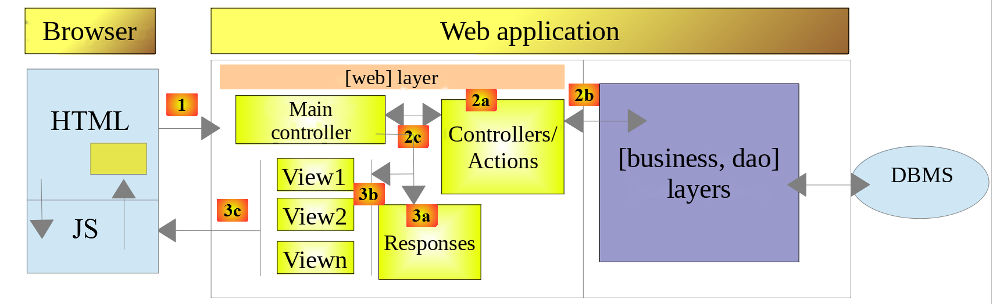
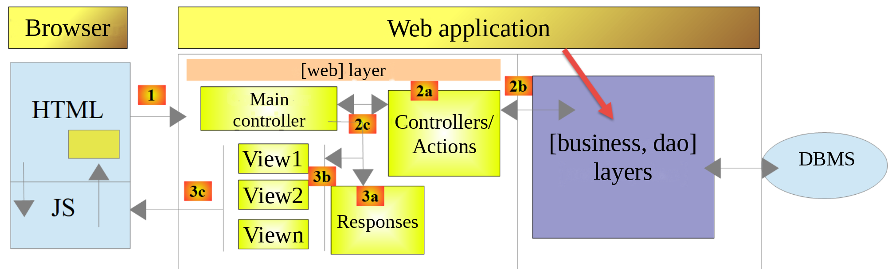
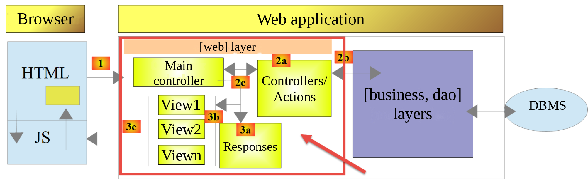
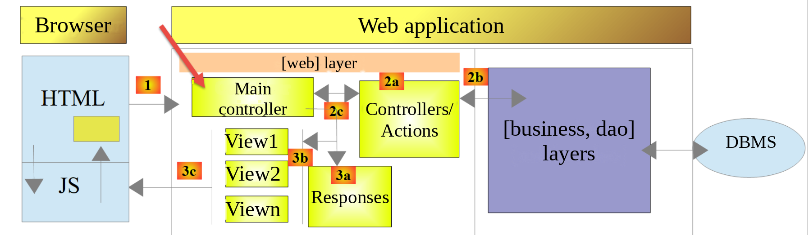
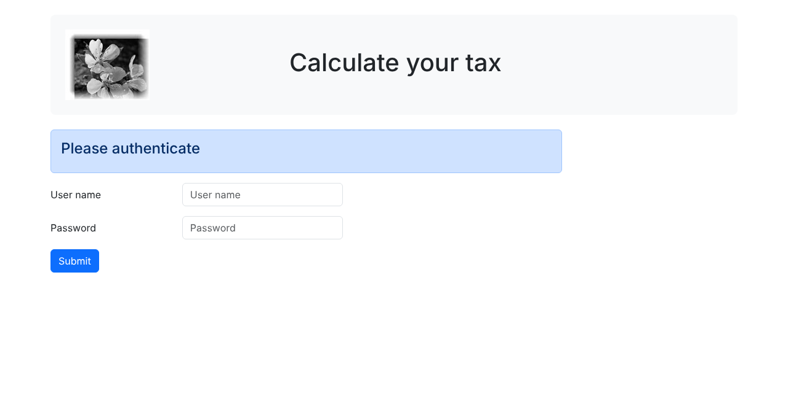
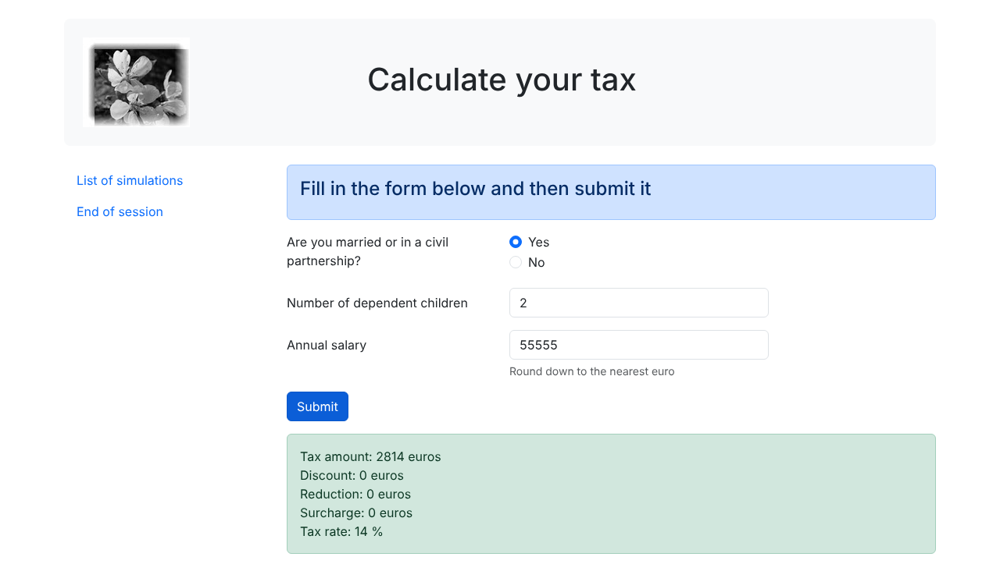
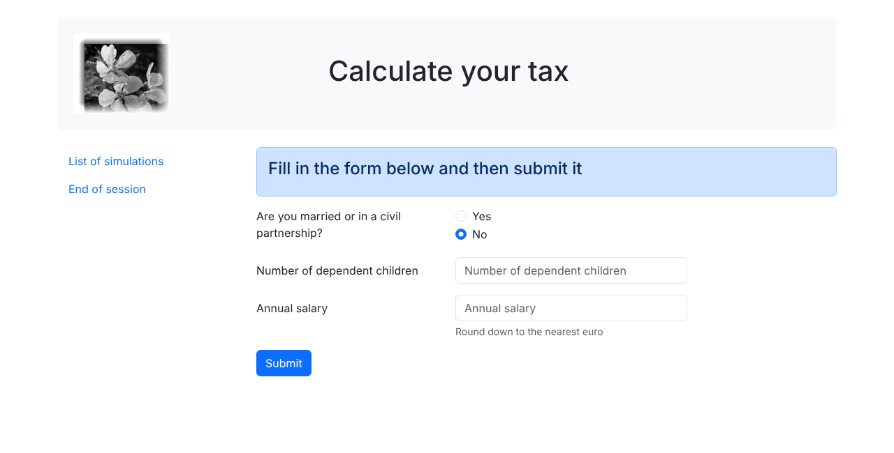
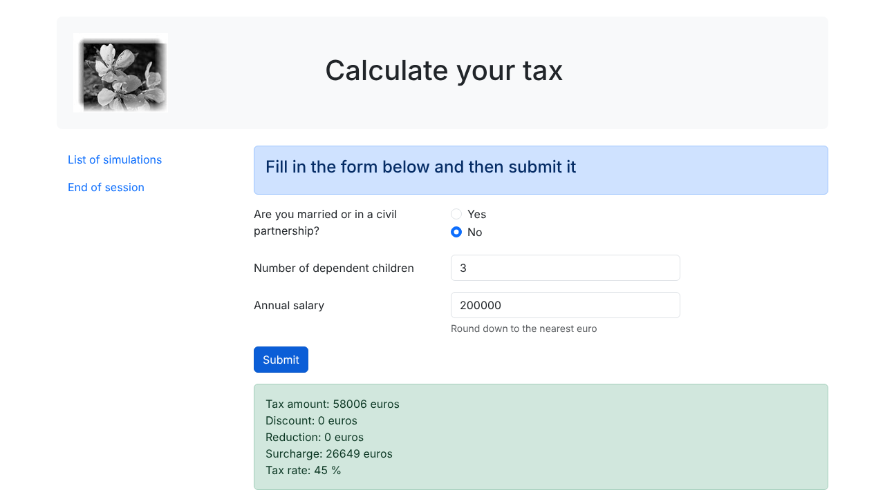
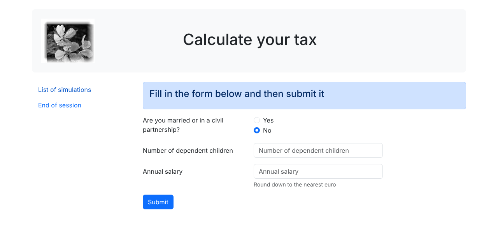

23. Exercício prático – Versão 12
Neste capítulo, vamos escrever uma aplicação web que segue a arquitetura MVC (Model-View-Controller). A aplicação poderá devolver respostas em três formatos: JSON, XML e HTML. Há um aumento significativo de complexidade entre o que vamos fazer agora e o que fizemos até aqui. Reutilizaremos a maior parte dos conceitos vistos até o momento e detalharemos todas as etapas que levam à aplicação final.
23.1. Arquitetura MVC
Vamos implementar o modelo de arquitetura conhecido como MVC (Model–View–Controller) da seguinte forma:

O processamento de uma requisição do cliente seguirá o fluxo abaixo:
- 1 - Requisição: os parâmetros da URL solicitada terão a forma [http://machine:port/context/main.php?action=anAction¶m1=v1¶m2=v2&…]. O [Main controller] usará o parâmetro [action] da URL para "encaminhar" a requisição ao controller secundário responsável por processar essa ação. O restante da URL e [param1=v1¶m2=v2&…] consiste em parâmetros opcionais que serão passados à ação. O C de MVC é a cadeia [Main controller, Controller / Action]. Se nenhum controller puder processar a ação solicitada, o servidor responderá que a ação solicitada é inválida;
- 2 - Processamento:
- A ação selecionada [2a] pode usar os parâmetros que lhe foram passados pelo [Main controller]. Esses parâmetros podem vir de várias fontes: o caminho [/param1/param2/…] da URL, os parâmetros [param1=v1¶m2=v2] da URL ou parâmetros enviados pelo navegador junto com a requisição;
- Ao processar a requisição do usuário, a ação pode precisar das camadas [business] e [2b] . Depois que a requisição do cliente é processada, ela pode gerar diversas respostas. Um exemplo clássico é: uma resposta de erro, se a requisição não pôde ser processada corretamente, ou uma resposta de confirmação, caso contrário;
- [Controller / Action] devolverá sua resposta, [2c], ao controller principal, junto com um código de status. Esses códigos de status representarão de forma única o estado atual da aplicação. Serão códigos de sucesso ou códigos de erro;
- 3 - Resposta:
- Conforme o cliente tenha solicitado uma resposta JSON, XML ou HTML, o [Main controller] instanciará o tipo de resposta apropriado ([3a]) e o instruirá a enviar a resposta ao cliente. O [Main controller] lhe passará a resposta e o código de status fornecidos pelo [Controller / Action] que foi executado;
- se a resposta desejada for do tipo JSON ou XML, a resposta selecionada formatará a resposta do [Controller / Action] que lhe foi fornecida e a enviará por meio de [3c]. O cliente capaz de processar essa resposta pode ser um script de console PHP ou um script JavaScript embutido em uma página HTML;
- se a resposta desejada for do tipo HTML, a resposta selecionada escolherá uma das views HTML [3b] ([View1], [View2]…) usando o código de status que lhe foi fornecido. Este é o V de MVC. Cada código de status corresponde a uma única view. Essa view V exibirá a resposta do [Controller / Action] executado. Ela formata os dados dessa resposta usando HTML, CSS e JavaScript. Esses dados são chamados de modelo da view. É o "M" de MVC. O cliente é, na maioria das vezes, um navegador web.
Agora, vamos esclarecer a relação entre a arquitetura web MVC e a arquitetura em camadas. Dependendo de como o modelo é definido, esses dois conceitos podem ou não estar relacionados. Vamos considerar uma aplicação web MVC de camada única:

No exemplo acima, cada componente [Controller / Action] incorpora partes das camadas [business] e [dao] . A camada [web] de fato tem uma arquitetura MVC, mas a aplicação como um todo não tem uma arquitetura em camadas. Aqui, há apenas uma camada que faz tudo.
Agora, vamos considerar uma arquitetura web de várias camadas:

A camada [web] pode ser implementada sem seguir o modelo MVC. Temos então uma arquitetura de várias camadas, mas a camada web não implementa o modelo MVC.
Por exemplo, no mundo .NET, a camada [web] pode ser implementada com ASP.NET Core MVC, resultando em uma arquitetura em camadas com uma camada [web] do tipo MVC. Feito isso, podemos substituir essa camada ASP.NET Core MVC por uma camada ASP.NET Core [Razor Pages] mantendo o restante (lógica de negócio, DAO, driver) inalterado. Temos então uma arquitetura em camadas com uma camada [web] que deixou de ser do tipo MVC.
No MVC, dissemos que o modelo M é o da view V, isto é, o conjunto de dados exibidos pela view V. Outra definição do modelo M para o MVC é dada a seguir:

Muitos autores consideram que o que está à direita da camada [web] forma o modelo M do MVC. Para evitar ambiguidade, podemos nos referir a:
- modelo de domínio, quando nos referimos a tudo o que está à direita da camada [web];
- modelo da view, quando nos referimos aos dados exibidos por uma view V.
23.2. Estrutura do projeto
Neste projeto, usamos uma estrutura de diretórios que espelha o modelo MVC. No [VS Code], a pasta [scripts-web/tax/version-12] contém os seguintes elementos:
- [main.php] é o controller principal do nosso modelo MVC. É o C de MVC;
- a pasta [Controllers] contém os controllers secundários. Cada um trata uma ação específica. Essa ação é indicada na URL, por exemplo, […/main.php?action=authenticate-user]. Com base nessa ação, o controller principal [main.php] selecionará um controller secundário — neste caso, [AuthenticateUserController]— para tratar a ação solicitada. Esses controllers também fazem parte do C de MVC;
- a pasta [Responses] contém as classes responsáveis por enviar a resposta ao cliente. Há uma classe para cada tipo de resposta desejado:
- [JsonResponse]: para uma resposta JSON;
- [XmlResponse]: para uma resposta do tipo XML;
- [HtmlResponse]: para uma resposta HTML;
- A pasta [Views] contém as views HTML, quando se deseja uma resposta HTML. Este é o V de MVC. Elas são ativadas pela classe [HtmlResponse], que lhes passa os dados a serem exibidos. Esses dados são o modelo da view. De acordo com a terminologia adotada para o M, esses dados podem ser o M de MVC;
- a pasta [Tests] contém versões de teste das views, que permitem ajustar sua aparência visual;
- a pasta [Entities] contém classes e enumerações usadas pelos diversos controllers;
- a pasta [Data] contém o arquivo de configuração [config.json] e o arquivo de log [logs.txt]. Como nas versões anteriores, o arquivo [.htaccess] da versão 8 impede que o [Apache] sirva seus arquivos: a configuração contém senhas.
O curso de PHP 7 copiava as classes das camadas [business] e [dao] (pasta [Model]) e os utilitários (pasta [Utilities]). Não as copiamos: como nas versões anteriores, essas classes são carregadas a partir das pastas das versões 5, 8, 9 e 11, onde foram originalmente escritas.
Com essa estrutura de diretórios, podemos descrever o fluxo de processamento de uma ação solicitada por um cliente:
- [main.php] recebe a requisição;
- após realizar algumas verificações preliminares (a ação é uma das ações aceitas?), encaminha a requisição ao controller secundário responsável por processar essa ação;
- o controller secundário executa suas tarefas. Ao realizar essa tarefa, ele pode precisar das camadas [business] e [dao], bem como das entidades da pasta [Entities]. Ele devolve sua resposta ao controller principal [main.php], que o ativou;
- dependendo do tipo de resposta [JSON, XML, HTML] solicitado pelo cliente, o controller principal [main.php] ativa uma das respostas da pasta [Responses];
- As respostas [JsonResponse, XmlResponse] enviam ao cliente a resposta JSON ou XML, respectivamente;
- A resposta [HtmlResponse] usa uma das views da pasta [Views] para enviar uma resposta HTML ao cliente;
- os diversos componentes acessam a classe [Logger] da versão 9 para gravar logs no arquivo [Data/logs.txt]. São registrados:
- a ação solicitada;
- a resposta do seu controller. Ela é registrada no formato JSON, independentemente do tipo [JSON, XML, HTML] solicitado;
- em caso de erro fatal (status HTTP 500 Internal Server Error), o controller principal [main.php] envia um e-mail ao administrador usando a classe [SendAdminMail] da versão 9.
23.3. Ações da aplicação
O cliente envia ao servidor web a ação a ser executada como o parâmetro [action] na URL [/main.php?action=xxx]. O curso de PHP 7 listava as ações permitidas no arquivo de configuração, cada uma associada ao nome de sua classe controller. Usamos uma enumeração (PHP 8.1), a enumeração [Action] da pasta [Entities]:
Comentários
- linha 9: a enumeração [Action] é uma enumeração "com valores associados" (backed): cada um de seus casos tem um valor, aqui do tipo [string]. Já encontramos enumerações no capítulo sobre classes;
- linha 11: [init-session] inicia uma sessão de simulações de cálculo de imposto. Essa ação especifica o tipo de respostas desejado: [JSON, XML, HTML];
- linha 12: uma vez definido o tipo da sessão, o cliente deve se autenticar usando a ação [authenticate-user]. Enquanto o cliente não estiver autenticado, todas as outras ações são proibidas, exceto [init-session];
- linha 13: uma vez autenticado, o cliente pode realizar uma série de cálculos de imposto usando a ação [calculate-tax];
- linha 14: a qualquer momento, o cliente pode solicitar a lista das simulações que realizou usando a ação [list-simulations];
- linha 15: ele pode excluir algumas delas usando a ação [delete-simulation];
- linha 16: o cliente encerra sua sessão de simulação usando a ação [end-session]. A partir desse momento, precisará se autenticar novamente se quiser usar a aplicação;
- linha 17: na aplicação HTML, a ação [display-tax-calculation] exibe o formulário usado para calcular o imposto;
- linhas 20–23: uma enumeração pode ter métodos. Dentro de um método, [$this] refere-se ao item da enumeração para o qual o método está sendo chamado. O método [requiresSessionType] indica se a ação só pode ser executada quando o tipo da sessão é conhecido: é o caso de todas as ações, exceto [init-session]. Os casos de uma enumeração são objetos únicos: eles são comparados com o operador [===];
- linhas 26–32: o método [requiresAuthentication] determina se a ação só pode ser executada por um usuário autenticado: é o caso de todas as ações, exceto [init-session] e [authenticate-user]. A expressão [match] permite vários valores, separados por vírgulas, em um mesmo ramo.
Essas regras, que no curso de PHP 7 eram escritas no controller principal, agora ficam agrupadas com as definições das ações.
23.4. Configuração da aplicação web
A aplicação é configurada pelo seguinte arquivo JSON [Data/config.json]:
Comentários
- linha 2: o arquivo JSON que descreve o banco de dados MySQL [dbtaxes-2019], que é o da versão 8. O caminho é relativo à pasta [version-12];
- Linhas 3–33: os arquivos PHP da aplicação. Eles contêm primeiro as classes que já foram escritas:
- as entidades [TaxException, TaxAdminData, Database] e a classe [Utilities] da versão 5;
- as camadas [dao] e [business] das versões 8 e 9;
- os utilitários [Logger] e [SendAdminMail] da versão 9 e [XmlUtilities] da versão 11;
- e as classes da versão 12, que apresentaremos a seguir. O arquivo PHP 7 também continha os caminhos absolutos das bibliotecas de terceiros ([C:/myprograms/laragon-lite/www/vendor/autoload.php]): o carregador de classes do [Composer] agora é carregado diretamente pelo [main.php], usando um caminho relativo;
- linhas 34–39: o usuário autorizado a usar a aplicação;
- linhas 40–48: os dados de contato por e-mail do administrador da aplicação. O e-mail é enviado ao servidor [Mailpit], que escuta na porta 1025 (veja a versão 9);
- linha 49: o caminho do arquivo de log;
- linhas 50–54: os detalhes do servidor [Redis], que serve de memória para o escopo [application] (veja a versão 10);
- linhas 55–59: associações [HTML view => array of the status codes leading to this view]. Elas são descritas um pouco mais adiante;
- linha 60: a view [view-errors.php] é exibida em uma sessão HTML sempre que ocorre um erro anormal:
- Uma aplicação JSON ou XML costuma ser consultada por um cliente programado. O cliente passa parâmetros ao servidor, que podem estar ausentes ou incorretos. Os controllers tratam esses casos e devolvem códigos de erro ao cliente. Todos os casos de erro possíveis devem ser tratados;
- com uma aplicação HTML, é um pouco diferente. Em uso normal, a aplicação web utiliza apenas um subconjunto dos casos de uso possíveis dos clientes JSON e XML. Vejamos um exemplo: a ação [calculate-tax] espera três parâmetros postados (enviados por um POST): [married, children, salary]. Com um cliente JSON que permite digitar a URL manualmente, é possível solicitar a ação [calculate-tax] com um GET em vez de um POST, ou com um POST sem nenhum parâmetro postado quando três são exigidos, e assim por diante. O servidor JSON deve tratar todos esses casos. Com uma aplicação web, a ação [calculate-tax] será solicitada a partir de um formulário web em que nenhum dos dois casos anteriores é possível: a ação [calculate-tax] será chamada com um POST e com os três parâmetros [married, children, salary]. No entanto, o usuário pode reproduzir certos erros digitando manualmente valores de URL no navegador. Por razões de segurança, esse cenário deve ser tratado;
- a view [view-errors.php] será exibida sempre que um controller secundário devolver um código de status incompatível com a aplicação web, isto é, um código de status ausente da chave [views] do arquivo de configuração. Optamos por essa solução com finalidade didática. Outra opção possível seria reexibir a view atualmente mostrada no navegador do cliente, de modo que o usuário tenha a impressão de que o servidor não responde às suas requisições de URL feitas manualmente.
Em comparação com o arquivo de configuração do curso de PHP 7, as chaves [rootDirectory] (o diretório raiz agora é conhecido como [main.php]), [actions] (substituída pela enumeração [Action]) e [types] (substituída pela enumeração [ResponseType] apresentada adiante) foram removidas.
23.5. Ferramentas e bibliotecas
23.5.1. A ferramenta [curl]
O curso de PHP 7 usava a ferramenta gráfica [Postman] para consultar os vários componentes de URL da aplicação web. Usamos a ferramenta de linha de comando [curl], apresentada no capítulo sobre serviços web. Ela nos permite:
- usar qualquer URL: elas são criadas manualmente;
- consultar o servidor web usando GET, POST, PUT, OPTIONS… (opções [-X] e [-d]);
- especificar os parâmetros do GET (na URL) ou do POST (opções [-d] e [--data-urlencode]);
- definir os cabeçalhos HTTP da requisição (opção [-H]);
- receber uma resposta nos formatos JSON, XML ou HTML;
- ter acesso aos cabeçalhos HTTP da resposta (opção [-i]);
- tratar o cookie de sessão como um navegador: a opção [-c cookies.txt] salva os cookies enviados pelo servidor no arquivo [cookies.txt], enquanto a opção [-b cookies.txt] os envia de volta ao servidor.
Como geramos manualmente as URLs solicitadas, poderemos testar todos os cenários de erro possíveis e ver como o servidor responde. Lembre-se de que, em um terminal [PowerShell], é preciso digitar [curl.exe] em vez de [curl]. Todos os comandos deste capítulo são digitados em um terminal aberto em qualquer diretório de trabalho, onde o [curl] cria o arquivo [cookies.txt].
Para postar o parâmetro [married], usaremos a opção [--data-urlencode "married=yes"], que codifica o nome e o valor do parâmetro para URL, se necessário. Os nomes dos parâmetros ([married], [number]...) não contêm caracteres acentuados, portanto na URL podemos escrevê-los como estão.
23.5.2. A biblioteca Symfony / Serializer
O curso de PHP 7 usava a biblioteca [Symfony / Serializer] para serializar as respostas do servidor em JSON e XML, que podem conter objetos [Simulation]. Ela tinha duas vantagens: a mesma API para JSON e XML; a serialização de objetos com atributos privados, expostos por getters.
Não a usamos nesta versão, embora ela esteja instalada na pasta [vendor] do curso:
- nossa classe [Simulation] é uma classe [readonly] com atributos públicos (veja o parágrafo seguinte). A função [json_encode] serializa diretamente os atributos públicos de um objeto: a serialização JSON não exige mais uma biblioteca;
- para XML, temos a classe [XmlUtilities] da versão 11, que produz documentos XML no mesmo formato dos da versão 11, que os clientes XML já sabem processar. Basta fornecer-lhe um array, depois de converter os objetos [Simulation] em arrays associativos;
- o servidor nunca precisa desserializar JSON ou XML em objetos, que era a outra vantagem destacada pelo curso de PHP 7.
A biblioteca [Symfony / Serializer] acrescentaria, portanto, apenas mais uma dependência aqui. Ela continua sendo uma boa escolha quando é preciso desserializar documentos em objetos tipados ou tratar muitos formatos diferentes.
23.6. Entidades da aplicação
A pasta [Entities] contém duas enumerações, [Action] (já apresentada) e [ResponseType] (apresentada junto com as respostas do servidor), e duas classes. A classe [Simulation] encapsula os elementos de uma simulação de cálculo de imposto:
Comentários
- linha 9: a classe é [readonly] (PHP 8.2): todos os seus atributos são somente leitura. Uma simulação é um objeto imutável: uma vez construído, ele não muda;
- linhas 13–24: os atributos são declarados e inicializados por meio dos parâmetros do construtor (PHP 8.0). Eles são tipados: [string] para o estado civil, [int] para os demais parâmetros e valores, e [float] para a alíquota do imposto;
- os atributos são públicos: como são somente leitura, não é mais necessário protegê-los com getters. A classe [Simulation] do PHP 7, derivada da classe [BaseEntity], tinha oito atributos [protected] sem tipo e oito getters.
A segunda classe, [ControllerResult], representa o resultado que um controller secundário devolve ao controller principal:
- linha 13: o código de status HTTP da resposta a ser enviada ao cliente;
- linha 15: o estado da aplicação após a execução da ação;
- linha 17: a própria resposta. Seu tipo depende da ação: uma mensagem, uma lista de mensagens de erro, uma simulação ou uma lista de simulações. O tipo [mixed] (PHP 8.0) aceita qualquer valor;
- linha 19: os cabeçalhos HTTP a serem adicionados à resposta. Este é um parâmetro opcional.
No curso de PHP 7, os controllers devolviam o array [[$statusCode, $status, $content, $headers]]. Um objeto com atributos nomeados e tipados é mais seguro: não é possível errar a ordem dos elementos.
23.7. Os utilitários da aplicação
A aplicação usa três utilitários que já foram descritos:
- a classe [Logger] da versão 9 permite registrar eventos em um arquivo de texto;
- a classe [SendAdminMail] da versão 9 permite enviar um e-mail ao administrador da aplicação;
- a classe [XmlUtilities] da versão 11 obtém o documento XML a partir de uma tabela.
23.8. As camadas [business] e [dao]

As classes e interfaces das camadas [business] e [dao] foram todas definidas e usadas em versões anteriores:
Classe | Função |
TaxException | A classe das exceções lançadas pela camada [dao]. Versão 5, pasta [Entities] |
InterfaceServerDao | Interface implementada pela camada [dao] do servidor. Versão 8, pasta [Dao] |
ServerDao | Implementação da interface [InterfaceServerDao]: os dados do imposto são lidos do banco de dados. Versão 8 |
ServerDaoWithSession | Classe derivada de [ServerDao]: os dados do imposto podem ser fornecidos ao construtor. Versão 9, pasta [Dao] |
InterfaceServerBusiness | Interface implementada pela camada [business] do servidor. Versão 8, pasta [Business] |
ServerBusiness | Implementação da interface [InterfaceServerBusiness]: cálculo do imposto. Versão 8 |
A aplicação em desenvolvimento faz, portanto, amplo uso de elementos que já foram apresentados e usados:
- as camadas [business] e [dao] ;
- os utilitários [Logger], [SendAdminMail], e [XmlUtilities];
- as entidades [TaxException, TaxAdminData, Database].
Vamos nos concentrar na camada [web] da aplicação:

23.9. O controller principal [main.php]
23.9.1. Introdução
O controller principal [main.php] é configurado pelo arquivo [Data/config.json]. Vamos rever sua posição em nossa arquitetura MVC:

O controller principal [main.php] é o primeiro elemento da arquitetura MVC a processar a requisição do cliente. Ele tem várias funções:
- Primeiro, ele realiza verificações básicas:
- O arquivo de configuração existe e é válido?
- ele carrega todas as dependências do projeto. Isso envolve carregar todos os componentes da arquitetura MVC;
- A ação solicitada foi especificada? Em caso afirmativo, ela é válida?
- Se a ação solicitada for válida, ele seleciona [2a]—o controller secundário que a processará— e lhe passa as informações de que precisa: a configuração da aplicação, a requisição HTTP e a sessão;
- ele recupera [2c] a resposta do controller secundário. Dependendo do tipo (JSON, XML, HTML) de resposta solicitado pelo cliente, ele seleciona [3a] a resposta (JsonResponse, XmlResponse, HtmlResponse) responsável por enviar a resposta ao cliente e lhe passa todas as informações de que precisa (a requisição HTTP, a sessão, a configuração da aplicação e a resposta do controller secundário).
23.9.2. [main.php] - 1
O início do controller principal [main.php] é o seguinte:
Comentários
- Linhas 10–12: o controller principal usa as seguintes classes da biblioteca Symfony [HttpFoundation]:
- [Request]: a requisição HTTP em processamento;
- [Response]: a resposta HTTP ao cliente;
- [Session]: a sessão da aplicação web;
- Linha 15: os erros detectados pelo PHP não são incluídos no documento enviado ao cliente: eles corromperiam as respostas JSON ou XML. Continuam registrados no log de erros do servidor web (arquivo [error.log] do Apache). Durante o desenvolvimento, essa linha pode ser comentada: os erros do PHP aparecerão então nas respostas recebidas pelo [curl] ou pelo navegador. Isso ajuda na depuração. O script PHP 7 também modificava o nível de relatório de erros com [error_reporting(E_ALL && !E_WARNING && !E_NOTICE)], uma expressão que, aliás, estava incorreta (exigia os operadores bit a bit [&] e [~]): ao contrário, não queremos ignorar nenhum erro;
- linha 18: o diretório raiz da aplicação, que é o do script [main.php]. Os caminhos no arquivo de configuração são relativos a esse diretório. A constante é definida no namespace [Application]: ela é, portanto, visível para as classes desse namespace, em particular o controller que calculará o imposto;
- linha 20: o caminho do arquivo de configuração;
- linha 23: o carregador de classes do [Composer] é carregado, tornando as classes do Symfony e do Predis disponíveis. Ele é carregado antes da leitura da configuração: a resposta de erro enviada se a configuração falhar usa a classe [Response] do Symfony. O script PHP 7 usava aqui um caminho absoluto;
- linhas 26–29: o arquivo de configuração é lido. Se ele não existir ou não puder ser lido, uma resposta de erro com status [131] é enviada ao cliente por meio da função [sendConfigError];
- linhas 30–34: o JSON do arquivo de configuração é decodificado. Com a opção [JSON_THROW_ON_ERROR], a função [json_decode] lança uma exceção [JsonException] se o JSON for inválido. Uma resposta de erro é então enviada com status [132]. A partir do PHP 8.0, a cláusula [catch] pode omitir a variável da exceção quando ela não é usada: [catch (\JsonException)];
Aqui temos um arquivo de configuração existente e sintaticamente correto. Seria necessário também verificar se as chaves esperadas estão de fato presentes nesse arquivo. Consideraremos isso parte do trabalho normal de depuração do desenvolvedor.
A função [sendConfigError] é definida no final do script:
- Linha 124: o tipo de retorno [never] (PHP 8.1) indica que a função nunca devolve o controle ao chamador; ela sempre termina com [exit] ou com uma exceção. Um analisador de código, como a extensão [PHP Intelephense] do [VS Code] , sabe então que o código que segue uma chamada a [sendConfigError] só é executado se a configuração pôde ser lida;
- linha 126: todas as respostas geradas pela aplicação web terão três chaves:
- [action]: a ação solicitada pelo cliente (desconhecida aqui);
- [status]: o estado da aplicação após a execução dessa ação;
- [response]: a resposta do servidor web;
- linha 127: como as classes da aplicação ainda não foram carregadas, uma resposta Symfony é construída diretamente, com o status [500 Internal Server Error];
- linha 128: a resposta é um documento JSON codificado em UTF-8;
- linha 129: a resposta é enviada ao cliente.
23.9.3. Testes com [curl] - 1
Vamos verificar o comportamento do servidor quando o arquivo de configuração está ausente ou incorreto. Vamos renomear [Data/config.json] para [Data/config2.json] e então solicitar a URL do controller principal:
- Linha 1: a opção [-i] instrui o [curl] a exibir os cabeçalhos HTTP da resposta;
- Linha 2: o servidor devolveu o código de status [500 Internal Server Error];
- linha 8: a resposta é um documento JSON;
- linha 10: o documento JSON da resposta. É de fato o que esperávamos.
Vamos renomear o arquivo de volta para [config.json] e então torná-lo sintaticamente incorreto, por exemplo apagando tudo depois da segunda linha. Não exibimos mais os cabeçalhos HTTP:
Este primeiro teste mostrou que podemos enviar qualquer tipo de requisição ao servidor em teste e que recebemos a resposta completa: os cabeçalhos HTTP e o documento que os segue. Não nos esqueçamos de restaurar o conteúdo do arquivo [config.json].
23.9.4. [main.php] – 2
Vamos agora retomar a análise do controller principal, [main.php]:
Comentários
- linhas 37–39: incluímos todas as dependências da aplicação. Já encontramos esse código várias vezes;
- linha 42: todas as informações da requisição do cliente são encapsuladas no objeto [Request] do Symfony;
- linhas 44–45: uma nova sessão é iniciada ou a sessão existente é recuperada, se o cliente enviou um cookie de sessão. A sessão é iniciada depois que as classes da aplicação foram carregadas: ela conterá objetos [Simulation], e a classe [Simulation] deve estar definida quando o PHP reconstruir os objetos da sessão;
- Linhas 48–59: tentamos criar o objeto [Logger], que nos permitirá registrar eventos no arquivo [Data/logs.txt]. Essa criação pode falhar: o construtor de [Logger] lança então uma exceção [TaxException];
- linhas 52–56: a resposta de erro, com status [133]. A mensagem usa o nome do arquivo de log especificado na configuração em vez do caminho completo: o caminho completo revelaria ao cliente a estrutura de pastas do servidor;
- linha 57: a resposta é enviada por meio de um objeto [JsonResponse], sem log, já que não foi possível criar um. As classes da aplicação agora estão carregadas: podem ser usadas;
- Linha 58: o script é encerrado.
Todas as respostas enviadas ao cliente implementam a seguinte interface [InterfaceResponse], da pasta [Responses]:
- Linhas 23–31: a interface [InterfaceResponse] tem um único método, [send], para enviar a resposta ao cliente;
- linhas 16–22: o significado dos diversos parâmetros do método [send];
- linhas 27–29: os parâmetros [$statusCode], [$content] e [$headers] contêm o resultado do controller secundário e as chaves [action, status] adicionadas pelo controller principal. No entanto, a resposta pode precisar de informações adicionais. Por isso, ela recebe os três primeiros parâmetros, que lhe dão acesso a todas as informações sobre a requisição, a sessão e a configuração;
- Linha 30: a resposta exige o [Logger] porque registrará a resposta enviada ao cliente. O tipo [?Logger] indica que o parâmetro pode ser [null]: é o caso quando o log não pôde ser criado. Na assinatura do PHP 7, os parâmetros [Request $request = NULL] e [Logger $logger = NULL] eram implicitamente anuláveis: essa sintaxe está obsoleta desde o PHP 8.4. Além disso, declarar um parâmetro opcional antes de parâmetros obrigatórios está obsoleto desde o PHP 8.0.
A classe [JsonResponse] implementa a interface [InterfaceResponse] da seguinte forma:
Comentários
- Linha 13: a classe estende a classe abstrata [ParentResponse], que implementa a interface [InterfaceResponse]. Todos os tipos de resposta estendem essa classe. É essa classe pai que envia a resposta ao cliente. Como esse código é comum a todos os tipos de resposta, ele foi extraído para uma classe pai. Nossa classe [JsonResponse] não é a classe [JsonResponse] do Symfony: ela está no namespace [Application], e não importamos a classe do Symfony;
- Linha 15: o atributo [Override] (PHP 8.3) indica que o método [send] implementa um método de uma classe pai ou de uma interface. Se não fosse o caso (por um erro de digitação no nome, por exemplo), o PHP reportaria um erro;
- Linha 26: a resposta [$content] é serializada em JSON. As opções de [json_encode] são definidas de uma vez por todas na classe pai. A função [json_encode] serializa um objeto [Simulation] como um objeto JSON cujas chaves são os nomes de seus atributos públicos;
- linha 28: pede-se à classe pai que envie a resposta ao cliente, especificando o tipo do documento como [application/json];
- linha 30: o JSON da resposta é registrado no log. O operador null-safe [?->] chama o método [write] somente se [$logger] não for [null].
O código da classe pai [ParentResponse] é o seguinte:
Comentários
- Linha 13: a classe é abstrata; não pode ser instanciada. Ela implementa a interface [InterfaceResponse] sem definir o método [send], que será definido pelas classes filhas. No curso de PHP 7, [ParentResponse] era uma classe comum que as classes filhas estendiam ao mesmo tempo que implementavam a interface;
- Linha 16: as opções de [json_encode] comuns a todas as respostas. Desde o PHP 8.3, uma constante de classe pode ser tipada:
- [JSON_UNESCAPED_UNICODE]: os caracteres acentuados são escritos como estão e não na forma [\u00e9];
- [JSON_UNESCAPED_SLASHES]: o caractere [/] não é codificado como [\/];
- [JSON_PRESERVE_ZERO_FRACTION]: um número real é sempre escrito com ponto decimal (uma alíquota zero é escrita como [0.0]);
- [JSON_THROW_ON_ERROR]: um erro de serialização lança uma exceção [JsonException];
- linha 24: o método [sendResponse] envia a resposta ao cliente. Observe que o corpo da resposta [$body] é do tipo [string] e, portanto, está pronto para ser enviado;
- linha 27: o construtor da classe [Response] do Symfony recebe o corpo da resposta, o status e os cabeçalhos;
- linha 29: o tipo do documento enviado, codificado em UTF-8;
- linha 31: a resposta é enviada ao cliente;
- linha 35: o método [log] registra a resposta em JSON. Ele será usado pelas respostas XML e HTML;
- linhas 42–49: o método estático [toArray] devolve os dados [$data], nos quais os objetos foram substituídos pelo array associativo de seus atributos públicos. Ele será usado pela resposta XML:
- a expressão [match (true)] seleciona o primeiro ramo cuja condição é verdadeira;
- linha 45: um objeto é substituído pelo array de seus atributos, devolvido pela função [get_object_vars]. Quando chamada de fora da classe do objeto, ela devolve apenas seus atributos públicos. Os próprios atributos podem ser objetos; por isso, [toArray] é chamada;
- linha 46: cada elemento de um array é transformado por [toArray]. A sintaxe [self::toArray(...)] (PHP 8.1) cria uma função anônima (uma [Closure]) a partir do método [toArray]: essa é a sintaxe das first-class callables. Com um único array, a função [array_map] preserva as chaves do array;
- linha 47: os demais valores (strings, números) são devolvidos como estão.
23.9.5. Testes com [curl] – 2
Vamos modificar o arquivo [config.json] da seguinte forma: ["logsFilename": "Data"]. O arquivo de log agora é [Data], que é uma pasta. A criação do arquivo [Data] deve, portanto, falhar:
- Linha 2: status [500 Internal Server Error];
- Linha 7: o cookie de sessão: a sessão foi iniciada antes da criação do log;
- linha 12: a resposta JSON esperada.
Vamos restaurar o valor [Data/logs.txt] na chave [logsFilename].
23.9.6. [main.php] – 3
Vamos continuar examinando o controller principal [main.php]:
Comentários
- linha 62: registramos no log o fato de termos uma nova requisição. Não podíamos fazer isso antes porque não tínhamos certeza de ter um arquivo de log válido;
- linha 65: o parâmetro [action] deve fazer parte da URL na forma [main.php?action=anAction]. Ele faz parte, portanto, dos parâmetros [$request->query] da URL. O método [getString] do Symfony devolve o valor do parâmetro como uma string, ou uma string vazia se o parâmetro estiver ausente;
- linha 66: a ação solicitada é registrada no log;
- linha 68: o método estático [tryFrom] de uma enumeração com valores associados devolve o caso da enumeração cujo valor é [$actionName], ou [null] se nenhum caso tiver esse valor. O método [from] faria o mesmo, mas lançaria uma exceção [ValueError] no segundo caso;
- linhas 70–78: verificações preliminares. Seu resultado, [$error], é um array [status, message] que descreve o primeiro erro encontrado, ou [null] se a ação puder ser executada. As condições são avaliadas na seguinte ordem:
- linha 71: o parâmetro [action] está ausente da URL: status [101];
- linha 72: a ação é desconhecida: status [102];
- linha 73: a aplicação oferece três tipos de resposta (JSON, XML, HTML). Esse tipo é definido pela ação [init-session], que o coloca na sessão, associado à chave [type]. Exceto pela ação [init-session], todas as ações devem ser executadas com uma chave [type] na sessão; caso contrário, o status é [103];
- Linha 75: exceto pelas ações [init-session] e [authenticate-user], todas as ações devem ser executadas após a autenticação. A autenticação é feita pela ação [authenticate-user], que, se a autenticação for bem-sucedida, define uma chave [user] na sessão; caso contrário, o status é [104];
- linha 77: nenhum erro;
- linhas 79–82: se a ação solicitada ou seu contexto de execução estiver incorreto, a resposta de erro é preparada, mas não enviada: status [400 Bad Request], status, lista de erros (com um único erro neste caso). A desestruturação [[$status, $message] = $error] atribui os dois elementos do array [$error] em uma única instrução;
- linhas 85–93: trata-se de uma operação válida. Instanciamos o controller secundário que a processará. O curso de PHP 7 construía o nome da classe do controller a partir da configuração ([__NAMESPACE__ . $config["actions"][$action]]) e depois o instanciava com [new $controller()]. A expressão [match] sobre os casos da enumeração [Action] é mais segura: o analisador de código do [VS Code] verifica os nomes das classes e, se um caso for adicionado à enumeração sem ser adicionado aqui, [match] lançará uma exceção [UnhandledMatchError] em vez de instanciar uma classe aleatória;
- linha 94: o nome do controller secundário é registrado no log para verificação durante o desenvolvimento. A partir do PHP 8.0, [$object::class] devolve o nome completo da classe de um objeto;
- linha 95: o controller secundário é executado. Ele devolve um objeto [ControllerResult]. Voltaremos aos controllers secundários um pouco mais adiante;
- Chegamos então à linha 99, seja porque ocorreu um erro, seja depois da execução de um controller. Em ambos os casos, o objeto [$result] contém tudo o que é necessário para gerar a resposta ao cliente;
- Linha 99: a resposta ao cliente é um array de três chaves chamadas [action, status, response]. A chave [action] facilitará o acompanhamento dos logs no arquivo [logs.txt]. A chave [status] servirá a dois propósitos:
- permitirá que clientes JSON e XML determinem o estado em que a ação executada colocou a aplicação web;
- no caso de uma resposta HTML, permitirá que o sistema selecione a view HTML a ser enviada ao navegador do cliente;
- Linhas 101–104: caso especial do código de status [500 Internal Server Error]. Se um controller definiu esse código de status, significa que a aplicação não pode funcionar. É o caso, por exemplo, do cálculo de imposto se o SGBD ou o servidor [Redis] não foi iniciado ou deixou de responder. Um e-mail é então enviado ao administrador da aplicação para notificá-lo, usando a classe [SendAdminMail] da versão 9;
- Linha 107: o tipo de resposta [JSON, XML, HTML] é determinado. Se a ação [init-session] foi executada com sucesso, esse tipo está presente na sessão, associado à chave [type]. Se não for o caso, o método [get] da sessão devolve o valor padrão [""], [tryFrom] devolve [null], e o operador [??] seleciona o tipo JSON;
- Linhas 109–117: o método [response] da enumeração [ResponseType], descrita mais adiante, devolve o objeto [JsonResponse], [XmlResponse] ou [HtmlResponse], apropriado para o tipo da sessão. Seu método [send] envia a resposta ao cliente. Como as três classes implementam a mesma interface [InterfaceResponse], seus métodos [send] têm todos a mesma assinatura;
- Linha 119: o controller principal concluiu seu trabalho. O script PHP 7 fechava aqui o arquivo de log; nossa classe [Logger] não tem mais um método [close].
23.9.7. Testes com [curl] – 3
Vamos testar vários cenários de erro para o parâmetro [action] da URL:
- Linhas 1–2: uma requisição sem o parâmetro [action] na URL: status [101];
- linhas 4–5: uma requisição com um parâmetro [action] inválido: status [102];
- linhas 7–8: uma ação reconhecida, mas o tipo da sessão (json, xml, html) ainda não foi especificado: status [103].
Nos três casos, a chave [response] é uma lista de erros, contendo aqui um único erro.
23.10. Controllers secundários
Cada ação é executada por um dos controllers da pasta [Controllers]:

Na arquitetura geral da aplicação acima, os controllers secundários estão em [2a]. Cada controller implementa a seguinte interface [InterfaceController]:
Comentários
- Linha 20: todos os controllers secundários são executados por meio do método [execute]. As informações conhecidas pelo controller principal são passadas a esse método:
- [array $config]: a configuração da aplicação;
- [Request $request]: a requisição HTTP em processamento;
- [Session $session]: a sessão atual da aplicação web;
- O método [execute] devolve um objeto [ControllerResult]: o código de status HTTP da resposta, o estado da aplicação ao final da execução, a resposta a ser enviada ao cliente e os cabeçalhos HTTP a serem adicionados à resposta.
O método do PHP 7 tinha um quarto parâmetro, [array $infos = NULL], que era incluído "por precaução", mas nunca usado: nós o removemos. Cada controller secundário é chamado pelo seguinte código no controller principal:
23.11. Ações
Vamos agora rever as diversas ações possíveis do serviço web:
Ação | Função | Contexto de execução |
init-session | Usada para especificar o tipo (json, xml, html) das respostas desejadas | Requisição GET main.php?action=init-session&type=x Pode ser emitida a qualquer momento |
authenticate-user | Autoriza ou nega o login de um usuário | Requisição POST main.php?action=authenticate-user A requisição deve incluir dois parâmetros POST: [user, password] Só pode ser emitida se o tipo da sessão (json, xml, html) for conhecido |
calculate-tax | Realiza uma simulação de cálculo de imposto | Requisição: POST main.php?action=calculate-tax A requisição deve ter três parâmetros POST: [married, children, salary] Só pode ser emitida se o tipo da sessão for conhecido e o usuário estiver autenticado |
list-simulations | Solicita a lista das simulações realizadas desde o início da sessão | Requisição GET main.php?action=list-simulations A requisição não aceita nenhum outro parâmetro Só pode ser emitida se o tipo da sessão for conhecido e o usuário estiver autenticado |
delete-simulation | Exclui uma simulação da lista de simulações | Requisição GET main.php?action=delete-simulation&number=x A requisição não aceita nenhum outro parâmetro Só pode ser emitida se o tipo da sessão for conhecido e o usuário estiver autenticado |
end-session | Encerra a sessão de simulação | Requisição GET main.php?action=end-session Tecnicamente, a antiga sessão web é excluída e uma nova sessão é criada Só pode ser emitida se o tipo da sessão for conhecido e o usuário estiver autenticado |
display-tax-calculation | Exibe a view de cálculo de imposto (aplicação HTML) | Requisição GET main.php?action=display-tax-calculation Só pode ser emitida se o tipo da sessão for conhecido e o usuário estiver autenticado |
Todos os controllers secundários procedem da mesma maneira:
- eles verificam seus parâmetros. Estes se encontram no objeto [$request->query] para os parâmetros presentes na URL e no objeto [$request->request] para os que são postados (requisição POST);
- Um controller é semelhante a uma função ou método que verifica a validade de seus parâmetros. Para o controller, porém, é um pouco mais complicado:
- os parâmetros esperados podem estar ausentes;
- os parâmetros esperados são todos cadeias de caracteres, ao passo que uma função pode especificar o tipo de seus parâmetros. Se o parâmetro esperado for um número, é preciso verificar se a cadeia do parâmetro de fato representa um número;
- depois de verificar que os parâmetros esperados estão presentes e sintaticamente corretos, é preciso verificar se são válidos no contexto de execução atual. Esse contexto é armazenado na sessão. A autenticação é um exemplo de contexto de execução: certas ações só devem ser processadas depois que o cliente for autenticado. Uma chave na sessão indica se essa autenticação ocorreu ou não;
- Concluídas as verificações anteriores, o controller secundário pode iniciar o processamento. Essa validação de parâmetros é muito importante. Não podemos permitir que um cliente nos envie qualquer coisa em qualquer momento do ciclo de vida da aplicação. Devemos manter controle total sobre o ciclo de vida da aplicação;
- Terminado o seu trabalho, o controller secundário devolve o objeto [ControllerResult] esperado pelo controller principal que o chamou.
Vamos agora rever os diversos controllers — ou, em outras palavras, as diversas ações que conduzem o ciclo de vida da aplicação web.
23.11.1. A ação [init-session]
A ação [init-session] é tratada pelo seguinte controller, [InitSessionController]:
Comentários
- Espera-se uma requisição [GET main.php?action=init-session&type=xxx];
- Linha 14: a classe implementa a interface [InterfaceController]. Ela é [final]: não é possível derivar dela;
- Linhas 20–23: verificamos se a requisição é um GET com dois parâmetros na URL. Se não for, um resultado de erro é devolvido ao controller principal com o status [701]. O método [getMethod] do Symfony devolve o nome do método HTTP em maiúsculas: não é mais necessário convertê-lo para minúsculas, como fazia o script PHP 7;
- linhas 25–27: verificamos se o parâmetro [type] está presente na URL. Se não estiver, devolvemos um resultado de erro com o status [702];
- linha 29: registramos o tipo da sessão;
- Linhas 30–32: verificamos se o tipo da sessão é um dos termos (json, xml, html), isto é, o valor deve ser um dos casos da enumeração [ResponseType]. Se não for, devolvemos um resultado de erro com o status [703];
- linha 34: o tipo da sessão é definido na sessão da aplicação web;
- linha 36: o controller terminou seu trabalho. Um resultado de sucesso é devolvido ao controller principal, com o status [700].
Cada caso de erro resulta em um [return] imediato. O script PHP 7 usava uma variável booleana [$error] que era verificada a cada etapa: o código agora é mais curto e mais legível. Vamos rever o que o controller principal faz com as respostas dos controllers secundários: ele adiciona as chaves [action] e [status] à resposta e a envia instanciando uma das classes [JsonResponse, XmlResponse, HtmlResponse] conforme o tipo (json, xml, html) da sessão atual.
A seguir, faremos testes com o [curl] no contexto de uma sessão de simulação [json].
23.11.2. Testes com [curl]
- Linhas 1–2: a ação [init-session] sem o parâmetro [type]: a requisição não tem os dois parâmetros esperados; status [701];
- linhas 4–5: a ação [init-session] com o parâmetro [typ] em vez de [type]: status [702];
- linhas 7–8: a ação [init-session] com um parâmetro [type] incorreto: status [703];
- linhas 10–20: a ação [init-session] com o tipo [json]: status [700].
As opções [-c cookies.txt -b cookies.txt] fazem o [curl] tratar o cookie de sessão como um navegador. O cookie foi enviado pelo servidor na resposta à primeira requisição (linhas 1–2); o [curl] o salvou no arquivo [cookies.txt] e o reenvia a cada requisição. O servidor não o envia mais (linhas 11–18); ele só faz isso no início de uma nova sessão. O arquivo [cookies.txt] agora contém:
23.11.3. A ação [authenticate-user]
A ação [authenticate-user] é executada pelo seguinte controller, [AuthenticateUserController]:
Comentários
- Espera-se uma requisição [POST main.php?action=authenticate-user] com dois parâmetros postados, [user, password];
- Linhas 20–23: verifica-se se há uma requisição POST com um único parâmetro na URL. Se não houver, um resultado de erro é devolvido com o status [201];
- linha 26: o status de erro para os parâmetros postados começa no valor 210;
- linhas 28–31: verificamos a presença do parâmetro [user] nos valores postados. Se ele não estiver presente, registramos o erro no log e incrementamos o status em 2;
- Linhas 33–36: verificamos a presença do parâmetro [password]. Se ele não estiver presente, registramos o erro no log e somamos 4 ao status. O status é, portanto, 212 se apenas [user] estiver ausente, 214 se apenas [password] estiver ausente e 216 se ambos estiverem ausentes;
- linhas 38–40: se algum dos valores postados estiver ausente, um resultado de erro é devolvido, sendo a resposta a lista de erros;
- linhas 41–42: os identificadores postados;
- linhas 44–47: verifica-se se o par [[$user, $password]] está presente no array [$config["users"]] do arquivo de configuração. A função [array_any] (PHP 8.4) devolve [true] se pelo menos um elemento do array satisfizer a condição expressa pela arrow function. A senha é comparada com a função [hash_equals], cujo tempo de execução não depende da posição do primeiro caractere diferente: um atacante não consegue adivinhar a senha caractere por caractere medindo os tempos de resposta. O script PHP 7 usava um laço [while];
- linhas 48–51: se o usuário não for encontrado, um resultado de erro é devolvido com o status HTTP [401 Unauthorized] e o status [221]. A mensagem do PHP 7 continha a senha digitada: uma senha nunca deve ser devolvida ao cliente nem gravada nos logs;
- linha 53: a autenticação foi bem-sucedida. Isso é registrado na sessão pela adição da chave [user], tendo como valor o identificador do usuário. A presença dessa chave indica autenticação bem-sucedida;
- Linha 55: um resultado de sucesso é devolvido ao controller principal, com o status [200].
23.11.4. Testes com [curl]
Prosseguimos com o teste do controller [AuthenticateUserController] no modo JSON, dentro da sessão aberta anteriormente:
- Linhas 1–2: antes de qualquer autenticação, solicita-se um cálculo de imposto. A opção [-d] converte a requisição em POST. O controller principal rejeita a ação: status [104];
- linhas 4–5: a ação [authenticate-user] usa um GET quando um POST é exigido: status [201];
- linhas 7–8: um POST (opção [-X POST]) sem nenhum parâmetro postado: status [216];
- linhas 10–11: um POST apenas com o parâmetro [password]: status [212]. Com a opção [-d], os parâmetros são enviados exatamente como seriam em um formulário HTML: o corpo da requisição é a cadeia [password=x], e o cabeçalho [Content-Type] é definido como [application/x-www-form-urlencoded];
- linhas 13–14: um POST com o único parâmetro [user]; status [214];
- linhas 16–26: um POST com identificadores inválidos: status [221]. Observe o status da resposta [401 Unauthorized] (linha 17);
- linhas 28–38: um POST com identificadores válidos: status [200] e status [200 OK] (linha 29).
23.11.5. Ação [calculate-tax]
A ação [calculate-tax] é processada pelo seguinte controller [CalculateTaxController]:
1 2 3 4 5 6 7 8 9 10 11 12 13 14 15 16 17 18 19 20 21 22 23 24 25 26 27 28 29 30 31 32 33 34 35 36 37 38 39 40 41 42 43 44 45 46 47 48 49 50 51 52 53 54 55 56 57 58 59 60 61 62 63 64 65 66 67 68 69 70 71 72 73 74 75 76 77 78 79 80 81 82 83 84 85 86 87 88 89 90 91 92 93 94 95 96 97 98 99 100 101 102 103 104 105 106 107 108 109 110 111 112 113 114 115 | |
Comentários
- A requisição esperada é [POST main.php?action=calculate-tax] com três parâmetros postados [married, children, salary]:
- [married] deve ter seu valor em [yes, no];
- [children, salary] devem ser inteiros positivos ou zero;
- Linhas 13–16: como na versão 10, usamos a biblioteca [Predis] e a camada [dao] da versão 9, sob o alias [ServerDaoWithRedis];
- linhas 25–29: verificamos se há de fato um POST com um único parâmetro na URL. Se não houver, um resultado de erro é devolvido ao controller principal, com o status [301];
- linhas 32–33: as mensagens de erro são acumuladas no array [$errors]. A contagem começa em 310, e cada erro a incrementa em um;
- linhas 35–44: verificamos a presença do parâmetro [married] (+2 se ausente) e depois verificamos se seu valor está em [yes, no] (+4 caso contrário);
- linhas 47–60: os parâmetros [children] e [salary] são verificados pelo mesmo laço. O array percorrido associa cada parâmetro ao par de valores somados ao status quando o parâmetro está ausente ou inválido: (8, 9) para [children], (16, 17) para [salary]. A desestruturação de [[$missing, $invalid]] é feita diretamente na instrução [foreach]. O script PHP 7 escrevia o mesmo código duas vezes;
- linhas 48–52: o parâmetro está ausente; a instrução [continue] passa para o parâmetro seguinte;
- linhas 54–59: o valor deve ser uma sequência de pelo menos um dígito. Se for, ele é convertido em inteiro e armazenado no array [$values];
- linhas 62–64: se houve erros, é devolvido um resultado contendo a lista dos erros;
- linha 65: os parâmetros são válidos. O imposto pode ser calculado. Para isso, é preciso criar as camadas [dao] e [business] , capazes de realizar esse cálculo;
- linhas 68–79: é criado um cliente chamado [Redis] e uma conexão com o servidor é estabelecida imediatamente. Se não foi possível nos conectar ao servidor [Redis], devolvemos um resultado com o status [500 Internal Server Error] e a condição [350];
- linhas 81–98: construção da camada [dao]:
- Linha 82: verifica-se se o servidor [Redis] tem a chave [taxAdminData]. Essa chave representa os dados da administração tributária. O método [get] do [Predis] devolve [null] se a chave não existir;
- linha 85: a chave não existe; os dados do imposto devem ser obtidos do banco de dados. O caminho do arquivo de descrição do banco de dados é relativo ao diretório raiz da aplicação, determinado pela constante [ROOT_DIRECTORY] definida pelo [main.php];
- linha 86: os dados obtidos do banco de dados são armazenados na memória do [Redis] com a chave [taxAdminData], na forma de sua string JSON;
- linhas 89–90: se a chave [taxAdminData] existir na memória do [Redis], os dados do imposto são passados diretamente ao construtor da camada [dao];
- linhas 92–94: se a consulta ao banco de dados falhou, é devolvido um resultado com o status [500 Internal Server Error], o status da aplicação [341] e a mensagem da exceção lançada pela camada [dao]. A listagem do curso de PHP 7 mostrava aqui o status 340, embora seu código-fonte, sua configuração (que associa o status 341 à view de cálculo de imposto) e seu texto usassem todos 341. Escolhemos 341: o status 340 já é o status de uma requisição com três parâmetros postados inválidos (310 + 4 + 9 + 17);
- linhas 95–98: a cláusula [finally] é executada em todos os casos, tenha ocorrido ou não uma exceção, e mesmo que o bloco [catch] termine com um [return]. Aqui, a conexão com o servidor [Redis] é fechada;
- linha 100: a camada [business] é criada e calcula o imposto. O resultado é o array [tax, surcharge, discount, reduction, rate];
- Linha 102: com base no resultado do cálculo, um objeto [Simulation] é criado. Os três primeiros argumentos são posicionais. O operador [...] decompõe então o array associativo [$result]: a partir do PHP 8.1, suas chaves se tornam argumentos nomeados — neste caso, [tax, surcharge, discount, reduction, rate]— que são os nomes dos últimos parâmetros do construtor;
- linha 104: a simulação que acabou de ser construída é adicionada à lista de simulações já calculadas, que está na sessão. O segundo parâmetro do método [get] da sessão é o valor devolvido se a chave estiver ausente: uma lista vazia se ainda não foi feita nenhuma simulação. A nova lista é construída decompondo a lista antiga, seguida da nova simulação, e depois devolvida à sessão;
- linha 106: a simulação é devolvida ao controller principal, com o status [300];
- linha 111: uma mensagem de erro de um driver de SGBD pode não estar codificada em UTF-8 (veja a versão 8). Nesse caso, ela não poderia ser colocada em uma string JSON. O script PHP 7 usava a função [utf8_encode], obsoleta desde o PHP 8.2; agora usamos [mb_convert_encoding].
23.11.6. Testes com [curl]
Estamos testando o controller [CalculateTaxController] no modo JSON, com o usuário autenticado:
- Linhas 1–2: fazemos uma requisição GET em vez de POST: status [301];
- linhas 4–5: uma requisição POST com os três parâmetros [married, children, salary] presentes e todos inválidos: status 310 + 4 + 9 + 17 = 340;
- linhas 7–8: apenas o parâmetro [salary] é postado, e também é inválido: status 310 + 2 + 8 + 17 = 337;
- linhas 10–11: um cálculo de imposto com parâmetros válidos: status [300]. O resultado é o objeto JSON da simulação. Isso corresponde ao valor de imposto de 2.814 euros do exemplo oficial de 2019 para um casal com dois filhos e uma renda de 55.555 euros;
- Linhas 13–14: um segundo cálculo de imposto.
Observe que o status nem sempre indica uma combinação única de erros: 8 + 17 = 9 + 16. O status 337 também corresponde a uma requisição em que [married] e [salary] estão ausentes e em que [children] é inválido. A lista de mensagens de erro fornece uma descrição precisa dos erros.
Vamos agora simular uma falha do servidor [Redis]. Em vez de desligar o servidor, especificamos no [config.json] uma porta na qual nenhum servidor está escutando: ["port": 6380]. Depois de nos autenticarmos novamente, uma requisição de cálculo devolve a seguinte resposta:
- linha 5: status [500 Internal Server Error];
- linha 14: o status [350] e a mensagem da exceção lançada pelo [Predis].
Um e-mail foi enviado ao administrador da aplicação: isso pode ser visto na interface web do [Mailpit] (URL [http://localhost:8025]). O assunto é [tax calculation server crash], e o corpo contém a resposta JSON enviada ao cliente. Não se esqueça de restaurar a porta 6379.
23.11.7. Ação [list-simulations]
A ação [list-simulations] é processada pelo seguinte controller secundário, [ListSimulationsController]:
Comentários
- [GET main.php?action=list-simulations] requisição;
- linhas 20–23: verifica-se que há uma requisição GET com um único parâmetro. Caso contrário, um resultado de erro é devolvido ao controller principal, com o status [501];
- linha 25: a lista de simulações encontrada na sessão é devolvida ao controller principal (ou uma lista vazia, se a sessão não contiver nenhuma), com o status [500]. O curso de PHP 7 declarava a classe sem [implements InterfaceController]: uma omissão, corrigida aqui.
23.11.8. Testes com [curl]
Vamos executar dois testes, um com erro e outro bem-sucedido:
- Linhas 1–2: uma requisição GET com um parâmetro [param1] a mais na URL: status [501];
- Linhas 4–5: uma requisição válida: status [500]. A resposta é o JSON da lista das duas simulações realizadas anteriormente.
23.11.9. Ação [delete-simulation]
A ação [delete-simulation] é processada pelo seguinte controller secundário, [DeleteSimulationController]:
Comentários
- requisição [GET main.php?action=delete-simulation&number=x];
- linhas 20–22: verifica-se que há uma requisição GET com dois parâmetros. Caso contrário, o status é [602];
- linhas 24–26: verifica-se que o parâmetro [number] existe entre os parâmetros da URL. Caso contrário, o status é [604];
- linhas 28–31: verifica-se que o valor do parâmetro [number] é sintaticamente correto: um inteiro positivo ou zero. Caso contrário, o status é [612];
- linhas 33–37: verifica-se que a simulação nº [number] realmente existe: o número deve estar no intervalo [0, n-1], em que n é o número de simulações na sessão. Caso contrário, o status é [628]. Como o número não pode ser negativo, basta verificar se ele é menor que n. Se a sessão não contiver nenhuma simulação, n é 0;
- linha 39: a simulação nº [number] é excluída pela função [array_splice], que exclui um elemento a partir da posição [$number] e renumera os elementos seguintes. O script PHP 7 usava [unset], que não altera as chaves dos demais elementos, e depois [array_values] para obter uma lista com chaves [0, n-2];
- linha 41: a nova tabela de simulações é devolvida à sessão;
- linha 43: a nova lista de simulações é devolvida ao controller principal, com o status [600];
- linha 47: um método utilitário que constrói um resultado de erro. Os status de erro são os do script PHP 7, que os calculava somando 2, 4, 8 e depois 16 ao status 600 conforme as verificações avançavam.
23.11.10. Testes para [curl]
Vamos realizar testes de erro e de sucesso:
- linhas 1–2: uma requisição GET sem o parâmetro [number]: status [602];
- linhas 4–5: uma requisição GET com dois parâmetros, mas sem [number]: status [604];
- linhas 7–8: uma requisição com um número sintaticamente incorreto: status [612];
- linhas 10–11: uma requisição com um número de simulação igual a 100, que não existe: status [628];
- linhas 13–14: a simulação nº 0, a primeira da lista, é excluída: status [600]. A resposta é a nova lista, que agora contém apenas a segunda simulação;
- linhas 16–17: a operação é repetida; não resta nenhuma simulação na sessão.
23.11.11. Ação [end-session]
A ação [end-session] é processada pelo seguinte controller secundário, [EndSessionController]:
Comentários
- requisição [GET main.php?action=end-session];
- linhas 20–23: verifica-se que a ação é um GET com o único parâmetro [action]. Caso contrário, o status é [401];
- linha 25: antes de a sessão terminar, o tipo da sessão ([json, xml, html]) é armazenado;
- linha 27: a sessão atual é invalidada. Isso exclui os dados armazenados nela, e uma nova sessão é iniciada com um novo identificador;
- linha 29: o tipo da sessão anterior é restaurado na nova sessão. Em suma, recomeçamos com uma nova sessão que tem a única chave [type]: o usuário precisará se autenticar novamente;
- linha 31: o resultado é devolvido ao controller principal, com o status [400].
23.11.12. Testes com [curl]
Vamos realizar um teste de erro e um teste de sucesso:
- Linhas 1–2: solicitamos o encerramento da sessão com um POST em vez do GET esperado: status [401];
- Linhas 4–16: uma ação [end-session] válida: status [400];
- linhas 10–11: o servidor envia dois cabeçalhos [Set-Cookie]. O primeiro instrui o cliente a excluir o cookie da sessão antiga (sua data de expiração já passou). O segundo fornece ao cliente o novo cookie de sessão: começa uma nova sessão web. Vimos que, dentro da mesma sessão, o servidor deixa de enviar o cookie de sessão após a primeira resposta;
- linhas 18–19: na nova sessão, o usuário não está mais autenticado: status [104].
23.12. Tipos de resposta do servidor
23.12.1. Introdução
Vamos rever a arquitetura geral da aplicação:

Apresentaremos agora os possíveis tipos de resposta [3a]. Eles ficam na pasta [Responses] do projeto. Já apresentamos a interface [InterfaceResponse], a classe pai [ParentResponse], e a classe [JsonResponse]. O tipo de resposta de uma sessão é definido pela ação [init-session], que o coloca na sessão. Ele é representado pela enumeração [ResponseType] na pasta [Entities]:
Comentários
- linhas 11–13: os três tipos de resposta. O valor de cada case é o valor esperado para o parâmetro [type] da ação [init-session];
- Linhas 16–23: o método [response] devolve o objeto responsável por enviar uma resposta desse tipo. O tipo de retorno é a interface [InterfaceResponse]: o código chamador conhece apenas o método [send] da interface. O curso de PHP 7 associava cada tipo, no arquivo de configuração, a um nome de classe (chave [types]) e a instanciava com [new $response()].
Vamos rever o código do controller principal que solicita o envio da resposta ao cliente:
- Linha 107: o tipo de resposta é determinado;
- linha 109: a classe de resposta apropriada é instanciada, e a resposta é enviada ao cliente por meio de seu método [send($request, $session, $config, $statusCode, $content, $headers, $logger)].
23.12.2. A classe [JsonResponse]
já foi apresentada. No entanto, incluímos novamente o seu código para destacar melhor a coerência entre as três classes de resposta:
23.12.3. A classe [XmlResponse]
A classe [XmlResponse] é a seguinte:
Comentários
- Linha 27: a resposta [$content] é serializada em XML pelo método [arrayToXml] da classe [XmlUtilities] da versão 11. Esse método espera um array cujos valores sejam arrays ou valores simples: o método [toArray] da classe pai primeiro substitui os objetos [Simulation] pelo array de seus atributos. O elemento raiz do documento se chama [root], como no curso de PHP 7;
- linha 29: a classe pai envia a resposta ao cliente, com o tipo [application/xml];
- linha 31: a resposta é registrada no log em JSON, que é mais conciso que o XML.
O curso de PHP 7 usava o codificador XML da biblioteca [Symfony / Serializer] e um segundo codificador, JSON, para os logs.
23.12.4. Testes com [curl]
Já executamos em JSON todos os testes de erro possíveis. Não há mais nada a fazer em XML. Vamos iniciar uma nova sessão (arquivo [cookies.txt] excluído) do tipo XML:
- Linhas 1–7: a requisição de início de sessão em XML e a resposta do servidor em XML. A partir de agora, todas as respostas do servidor serão em XML. Você pode reutilizar, sem alterações, todas as requisições usadas anteriormente, e cada uma devolverá uma resposta no formato XML;
- linhas 9–15: uma autenticação bem-sucedida;
- linhas 17–32: um cálculo de imposto. O elemento [response] contém os atributos da simulação como elementos filhos;
- linhas 34–51: a lista de simulações. Cada simulação é um elemento [item] do elemento [response];
- linhas 53–63: uma lista de erros. Cada mensagem de erro é um elemento [item].
23.12.5. A resposta [HtmlResponse]
Quando o tipo da sessão é [html], um objeto do tipo [HtmlResponse] é instanciado para enviar a resposta ao cliente. Esse objeto enviará ao cliente um documento HTML, que depende do código de status devolvido pelo controller secundário que processou a ação. Esse mapeamento, [status => view], é registrado no arquivo de configuração [config.json] da seguinte forma:
Essa configuração é interpretada assim: [‘view name' => ‘statuses associated with this view']:
- linha 56: se o controller secundário devolveu um status do array [700, 221, 400], exibe-se a view [view-authentication.php];
- linha 57: se o controller secundário devolveu um status do array [200, 300, 341, 350, 800], exibe-se a view [view-tax-calculation.php];
- linha 58: se o controller secundário devolveu um status do array [500, 600], exibe-se a view [view-simulations-list.php];
- linha 60: se o controller secundário devolveu um status que não consta em nenhum dos arrays anteriores, exibe-se a view [view-errors.php].
As views ficam na pasta [Views] do projeto. O código da classe [HtmlResponse] é o seguinte:
Comentários
- linha 26: a view a ser exibida depende do código de status devolvido pelo controller que processou a ação. Esse código está em [$content["status"]];
- linhas 29–32: procura-se na configuração da aplicação a view que corresponde a esse status. A função [array_find_key] (PHP 8.4) devolve a chave do primeiro elemento do array [$config["views"]] que satisfaz a condição expressa pela função de seta (arrow function), que aqui é o nome da primeira view cuja lista de status contém [$status]. Se nenhum elemento satisfizer a condição, ela devolve [null]: isso indica um código de status anormal para a aplicação HTML, e a view de erros é exibida por meio do operador [??]. O script PHP 7 fazia essa busca com um laço de quinze linhas [while];
- linhas 35–38: o código PHP da view selecionada é executado, e o resultado é armazenado na variável [$html]. Esse código merece uma explicação. Imaginemos que a view selecionada seja [view-authentication.php], que exibe um formulário web de autenticação:
- linha 35: a função [ob_start] inicia o que a documentação chama de bufferização de saída. Tudo o que é escrito pelas operações [print], [echo] ou pelo texto HTML de um script incluído, e que normalmente seria enviado imediatamente ao cliente, é colocado em um buffer de saída (ob) sem ser enviado ao cliente;
- linha 36: a view [view-authentication.php] é carregada; trata-se de uma view HTML dinâmica que contém código PHP. Duas coisas acontecem então. Primeiro, o código PHP da view é executado. O resultado é uma página que contém apenas HTML, ou mesmo CSS e JavaScript, mas não mais PHP. Em seguida, esse código HTML normalmente é enviado ao cliente. Isso vale, de fato, para qualquer texto encontrado pelo interpretador PHP que não seja código PHP. Por causa da bufferização de saída, esse código
HTMLé colocado no buffer de saída sem ser enviado ao cliente; - linha 38: a função [ob_get_clean] faz duas coisas: devolve o conteúdo do buffer de saída, isto é, a página HTML que foi colocada ali, e limpa o buffer e encerra a bufferização de saída. Do ponto de vista do cliente, é como se nada tivesse acontecido: ele ainda não recebeu nada;
- a view é incluída pelo método [send]: o código da view tem, portanto, acesso às variáveis locais do método, em particular a seus parâmetros [$request], [$session], [$config], e [$content]. É assim que a view recebe os dados de que precisa para exibir;
- [__DIR__] é o caminho absoluto da pasta que contém o script em execução, neste caso a pasta [Responses]. Para encontrar a view, é preciso, portanto, subir um nível com [..] e depois entrar na pasta [Views];
- linha 40: a classe pai envia a resposta ao cliente, com o tipo [text/html];
- linha 42: a resposta [$content] fornecida pelo controller secundário que processou a ação atual é registrada no log em JSON, sem o HTML.
23.12.6. Testes com [curl]
Para testar de fato o modo HTML da sessão, seria preciso revisar todas as views. Faremos isso mais adiante. Por ora, vamos apenas verificar se uma ação [init-session] bem-sucedida (status 700) em uma nova sessão do tipo [html] produz mesmo uma resposta HTML. De acordo com o arquivo de configuração, a view [view-authentication.php] é a resposta:
- Linha 1: a opção [-D -] instrui o [curl] a escrever os cabeçalhos HTTP da resposta na saída padrão (o arquivo [-]), e a opção [-o view.html] a escrever o corpo da resposta no arquivo [view.html];
- Linha 11: a resposta é um documento HTML.
Quando aberto em um navegador, o arquivo [view.html] exibe a view de autenticação, mostrada a seguir.
23.13. A aplicação web HTML
23.13.1. Visão geral das views
A aplicação web HTML usa quatro views. A view de autenticação:

A view de cálculo do imposto:

A view da lista de simulações:

View de erros inesperados:

As views usam o framework CSS [Bootstrap], versão 5.3. O curso de PHP 7 usava a versão 4.1: algumas classes CSS mudaram ou foram removidas; vamos apontá-las ao longo do texto. Descreveremos essas views uma a uma.
23.13.2. A view de autenticação
23.13.2.1. Visão geral da view
A view de autenticação é a seguinte:

A view é composta de três elementos, que chamaremos de fragmentos:
- o banner superior, com o logotipo e o título, é gerado pelo script [v-banner.php];
- o formulário de autenticação é gerado pelo script [v-authentication.php];
- a caixa de erros cor-de-rosa, exibida apenas quando há erros, é gerada pelo script [v-errors.php].
A view de autenticação é gerada pela seguinte página, [view-authentication.php]:
Comentários
- linhas 2–7: a view é executada pela instrução [require] no método [HtmlResponse::send]. Ela herda as variáveis desse método;
- linhas 13–28: a seção PHP da view calcula o modelo da view. Voltaremos a isso daqui a pouco;
- linha 30: um documento HTML5 começa com esta linha;
- linhas 31–61: a página HTML é delimitada pelas tags [<html>] e [</html>] . O atributo [lang] especifica o idioma do documento;
- linhas 32–40: cabeçalho (head) do documento HTML:
- linha 34: a tag [<meta charset>] indica que o documento está codificado em UTF-8;
- linha 35: a tag [<meta name="viewport">] define a exibição inicial da view: em toda a largura da tela que a exibe (width) em seu tamanho inicial (initial-scale). O valor [shrink-to-fit=no] da versão PHP 7 não é mais usado pelos navegadores atuais;
- linhas 37–38: a tag [<link rel="stylesheet">] especifica o arquivo CSS que governa a aparência da view. Usamos o framework CSS [Bootstrap] 5.3.8, baixado da rede de distribuição [jsDelivr] ([https://getbootstrap.com/docs/5.3/getting-started/introduction/]). O atributo [integrity] contém a impressão digital do arquivo: o navegador rejeita o arquivo baixado se ele não corresponder a essa impressão digital, o que protege a página contra adulteração do arquivo na rede de distribuição;
- linha 39: a tag [<title>] define o título da página, exibido na aba do navegador;
- linhas 41–60: o corpo da página web é delimitado pelas tags [<body>] e [</body>] ;
- linha 42: a tag [<div>] delimita uma seção da página exibida. Os atributos [class] usados na view se referem todos ao framework CSS Bootstrap. A tag [<div class="container">] delimita um contêiner do Bootstrap, centralizado na página;
- linha 44: o fragmento [v-banner.php] é incluído, e ele gera o cabeçalho da página. Vamos descrevê-lo em breve. O caminho é construído com [__DIR__], a pasta [Views]: um caminho relativo simples como ["v-banner.php"] seria procurado primeiro nos diretórios especificados pela diretiva [include_path] (PHP), depois na pasta do script chamador ([Responses]) e na pasta atual, o que pode levar a resultados inesperados;
- linhas 46–47: a tag [<div class="row">] delimita uma linha do Bootstrap. Essas linhas são compostas de 12 colunas. A tag [<div class="col-md-9">] delimita uma seção de 9 colunas;
- linha 48: o fragmento [v-authentication.php] é incluído, e ele exibe o formulário de autenticação;
- linhas 52–58: se a lista de erros do modelo não estiver vazia, o fragmento [v-errors.php] é incluído, e ele exibe os erros em uma nova linha do Bootstrap. Aqui usamos a sintaxe alternativa das estruturas de controle do PHP, [if (...):] ... [endif], que é mais legível que as chaves em uma página HTML. O script PHP 7 escrevia o código de erro com a sintaxe HTML ([heredoc]) ([print <<<EOT ... EOT;]).
Observemos os elementos dinâmicos a definir neste código:
- [$model->errors]: a lista de mensagens de erro, vazia se não houver erros;
- [$model->errorsTitle]: o texto que precede a lista de erros.
23.13.2.2. O fragmento [v-banner.php]
O fragmento [v-banner.php] exibe o banner superior em todas as views da aplicação web:
Comentários
- linha 6: o cabeçalho é envolvido por uma seção cujas classes do Bootstrap fornecem espaçamento interno (p-4), margens verticais (my-4), um fundo cinza-claro (bg-body-tertiary) e cantos arredondados (rounded-3). O curso de PHP 7 usava a classe [jumbotron] do Bootstrap 4, que não existe mais no Bootstrap 5: essas quatro classes a substituem;
- linha 7: uma linha do Bootstrap. A classe [align-items-center] centraliza verticalmente o conteúdo de suas colunas;
- linhas 8–10: uma imagem [<img>] é colocada nas quatro primeiras colunas da linha;
- linha 9: a sintaxe [<?= expression ?>] equivale a [<?php echo expression ?>]. Em outras palavras, o valor do atributo [src] será o valor da expressão PHP. Esta é:
- [$model->logo ?? "Views/logo.jpg"]: a URL do logotipo, se o modelo da view contiver uma; caso contrário, a URL relativa a [Views/logo.jpg]. Todas as URLs da aplicação têm a forma [http://localhost/php8-oct-2026/scripts-web/tax/version-12/main.php?action=…]: a URL relativa a [Views/logo.jpg] é complementada pelo navegador com o caminho da página exibida, resultando em [http://localhost/php8-oct-2026/scripts-web/tax/version-12/Views/logo.jpg]. O fragmento PHP 7 construía a URL absoluta do logotipo a partir de variáveis do servidor ([REQUEST_SCHEME], [SERVER_NAME], [SERVER_PORT], [REQUEST_URI]) e de uma expressão regular: isso era desnecessário;
- [htmlspecialchars(...)]: a função [htmlspecialchars] substitui os caracteres especiais do HTML por suas entidades: [&] torna-se [&], [<] torna-se [<], [>] torna-se [>], ["] torna-se ["], e ['] torna-se [']. Assim, o valor escrito na página não pode quebrar o atributo [src] nem inserir tags na página;
- linhas 11–13: as outras 8 colunas da linha (lembre-se de que há 12 no total) são usadas para exibir texto em fonte grande (tag [<h1>]).
Elemento dinâmico: [$model->logo], a URL da imagem exibida no banner (opcional).
Todo valor dinâmico escrito em uma página HTML deve passar por [htmlspecialchars]. Essa é a proteção contra ataques XSS (Cross-Site Scripting): se um valor digitado pelo usuário, ou proveniente de uma fonte não confiável, fosse escrito como está na página, um usuário mal-intencionado poderia injetar código, como [<script>…</script>], que seria executado pelos navegadores de quem visualizasse a página. A versão 7 do PHP não escapava nenhum valor. A partir da versão 8.1 do PHP, as opções padrão de [htmlspecialchars] ([ENT_QUOTES | ENT_SUBSTITUTE | ENT_HTML401]) também codificam o apóstrofo: chamar [htmlspecialchars($value)] é suficiente, quer o valor seja escrito em um texto, quer em um atributo delimitado por aspas ou apóstrofos.
23.13.2.3. O fragmento [v-authentication.php]
O fragmento [v-authentication.php] exibe o formulário de autenticação da aplicação web:
Comentários
- linhas 6–36: a tag [<form>] delimita um formulário HTML. Esse formulário geralmente tem as seguintes características:
- ele define campos de entrada (tags [<input>]);
- ele tem um botão do tipo [submit] que envia os valores digitados para a URL especificada no atributo [action] da tag [<form>]. O método HTTP usado para consultar essa URL é especificado no atributo [method] da tag [<form>];
- aqui, quando o usuário clica no botão [Submit], o navegador envia os valores digitados no formulário para a URL [main.php?action=authenticate-user];
- os valores enviados são os que o usuário digitou nos dois campos de entrada. Eles serão enviados na forma [user=xx&password=yy]. Os nomes de parâmetro [user, password] correspondem aos atributos [name] dos campos de entrada;
- linhas 8–10: uma seção do Bootstrap para exibir um título sobre um fundo azul;
- linhas 12–20: a primeira linha do formulário. A classe [mb-3] adiciona uma margem inferior à linha. O Bootstrap 4 usava a classe [form-group], que não existe mais no Bootstrap 5;
- linha 14: o rótulo, em três colunas. O atributo [for] da tag [<label>] vincula o rótulo ao atributo [id] do campo de entrada: clicar no rótulo coloca o cursor no campo de entrada;
- linha 16: o campo de entrada é colocado em um layout de quatro colunas;
- linhas 17–18: a tag HTML [<input>] define um campo de entrada. Ela tem vários atributos:
- [type="text"]: é um campo de entrada de texto. Você pode digitar qualquer coisa nele;
- [class="form-control"]: estilo Bootstrap do campo de entrada;
- [id="user"]: identificador do campo de entrada. Esse identificador geralmente é usado pelo CSS e pelo código JavaScript;
- [name="user"]: nome do campo de entrada. O valor digitado pelo usuário será enviado pelo navegador com esse nome ([user=xx]);
- [placeholder="prompt"]: o texto exibido no campo de entrada enquanto o usuário ainda não digitou nada;
- [value="value"]: o texto exibido no campo de entrada assim que ele aparece na tela, antes de o usuário digitar qualquer coisa. Esse mecanismo é usado em caso de erro para exibir a entrada que causou o erro. Aqui, esse valor será o de [$model->login], escapado por [htmlspecialchars]: um identificador digitado que contenha aspas não consegue fechar o atributo [value];
- linhas 22–29: código semelhante para o campo de entrada da senha. O atributo [type="password"] cria um campo de entrada de texto em que os caracteres digitados ficam ocultos;
- linhas 31–35: uma terceira linha para o botão [Submit];
- linha 33: por ter o atributo [type="submit"], clicar nesse botão faz o navegador enviar os valores digitados ao servidor. As classes CSS [btn btn-primary] exibem um botão azul.
Resta explicar uma última coisa. O atributo [action="main.php?action=authenticate-user"] da tag [<form>] define uma URL incompleta (ela não começa com http://máquina:porta/caminho). A view de autenticação será obtida por meio de várias URLs:
- [http://localhost/php8-oct-2026/scripts-web/tax/version-12/main.php?action=init-session&type=html];
- [http://localhost/php8-oct-2026/scripts-web/tax/version-12/main.php?action=authenticate-user].
Essas URLs se referem a um documento [main.php] localizado no caminho [http://localhost/php8-oct-2026/scripts-web/tax/version-12]. Isso valerá para todas as URLs desta aplicação. A URL [main.php?action=authenticate-user] receberá esse caminho como prefixo quando os valores digitados forem enviados. Esses valores serão, portanto, enviados para a URL [http://localhost/php8-oct-2026/scripts-web/tax/version-12/main.php?action=authenticate-user].
23.13.2.4. O fragmento [v-errors.php]
O fragmento [v-errors.php] exibe uma lista de mensagens de erro. Ele é usado por três das quatro views da aplicação:
- linha 5: os erros são exibidos em um contêiner do Bootstrap com fundo cor-de-rosa;
- linha 6: o texto que introduz os erros;
- linhas 7–11: a tag HTML [<ul>] (lista não ordenada) exibe uma lista com marcadores. Cada item da lista tem a sintaxe [<li>item</li>]. A classe [mb-0] remove a margem inferior da lista;
- linhas 8–10: a sintaxe alternativa do laço [foreach]. Cada mensagem é escapada por [htmlspecialchars]: as mensagens de erro dos controllers contêm os valores enviados pelo cliente ([invalid value [x] for parameter [children]]). No curso de PHP 7, o modelo da view continha a lista HTML de erros, construída por concatenação de strings [<li>$error</li>]: um valor enviado que contivesse código JavaScript teria sido executado pelo navegador.
Elementos dinâmicos: [$model->errorsTitle] and [$model->errors].
23.13.2.5. Teste visual
Podemos testar as views bem antes de integrá-las à aplicação. O objetivo aqui é testar sua aparência visual. Reunimos todas as views de teste na pasta [Tests] do projeto. Para testar a view [view-authentication.php], precisamos criar o modelo de dados que ela exibirá. O script [Tests/view-authentication.php] é o seguinte:
Comentários
- linha 5: a view de autenticação contém partes dinâmicas controladas pelo objeto [$model]. Esse objeto é chamado de modelo da view. Segundo uma das duas definições dadas para a sigla MVC, é o M de MVC. Ele é calculado pela função [getModelForThisView]. Uma função definida no nível superior de um script é conhecida assim que o script começa a ser executado: ela pode ser chamada antes de ser definida;
- linhas 9–17: o modelo da view é um objeto do tipo [stdClass], a classe genérica do PHP. Aqui ele é obtido convertendo-se um array associativo em objeto com o operador [(object)]: as chaves do array tornam-se os atributos do objeto. O tipo [stdClass] é o único tipo de objeto ao qual ainda é possível adicionar atributos não declarados (veja o capítulo sobre classes). Um array associativo poderia ter sido usado no lugar para obter o mesmo resultado;
- linha 14: valores de teste para os elementos dinâmicos da view. O segundo erro contém tags HTML: vamos verificar se elas são exibidas como estão, e não interpretadas pelo navegador;
- linha 16: a URL do logotipo é relativa à URL do script de teste, localizado na pasta [Tests];
- linha 32: o restante do script vem da view [Views/view-authentication.php]. Os fragmentos incluídos são os da pasta [Views]: são eles que estão sendo testados. O curso de PHP 7 copiava uma versão deles para a pasta [Tests].
O teste visual é feito solicitando, em um navegador, a URL [http://localhost/php8-oct-2026/scripts-web/tax/version-12/Tests/view-authentication.php] :

Observe que a tag [<b>] do segundo erro foi exibida, mas não interpretada: a proteção contra ataques XSS está funcionando. Continue esses testes visuais até ficar satisfeito com o resultado. Durante a depuração, modificamos o arquivo no [VS Code] e depois atualizamos a página do navegador (F5).
23.13.2.6. Cálculo do modelo da view
Depois de definida a aparência visual da view, podemos passar ao cálculo do modelo da view em condições reais. Vamos rever os códigos de status que levam a essa view. Eles se encontram no arquivo de configuração:
Portanto, os códigos de status [700, 221, 400] fazem com que a view de autenticação seja exibida. Para determinar o significado desses códigos, podemos nos remeter aos testes com [curl] realizados na aplicação JSON:
- 700 é o código de status após uma ação [init-session] bem-sucedida: o formulário de autenticação em branco é então exibido;
- 221 é o código de status após uma ação [authenticate-user] malsucedida (credenciais não reconhecidas): o formulário de autenticação é então exibido para que as credenciais possam ser corrigidas;
- 400 é o código de status após uma ação [end-session] bem-sucedida: o formulário de autenticação vazio é então exibido.
Agora que sabemos quando o formulário de autenticação deve ser exibido, podemos calcular seu modelo em [view-authentication.php]:
Comentários
- linhas 3–7: declaramos as variáveis herdadas do método [HtmlResponse::send], que renderiza a view com [require];
- linha 10: a classe do Symfony usada no código da view. A view não tem namespace: sem essa instrução, [Request] se referiria à classe [\Request], que não existe;
- linhas 15–28: a função [getModelForThisView] calcula o modelo da view. Ela recebe a requisição e a resposta do controller, os únicos dados de que precisa. As views não têm uma declaração [declare(strict_types=1)]: são páginas HTML com algum código PHP;
- linhas 18–27: o modelo depende do código de status devolvido pelo controller que processou a ação atual:
- linhas 20–23: em caso de falha na autenticação, o nome de usuário digitado, encontrado nos parâmetros enviados [$request->request], é exibido novamente, junto com uma mensagem de erro. O usuário pode então tentar outra autenticação;
- linha 26: códigos de status 700 e 400: um formulário de autenticação em branco, sem erros.
O script PHP 7 usava uma instrução que modificava um objeto criado no início da função.
23.13.2.7. Testes com [curl]
Já temos requisições que geram os códigos [700, 221, 400], os quais exibem a view de autenticação. Basta reutilizá-las em uma sessão do tipo [html] e verificar se elas exibem corretamente a view de autenticação. Vamos nos autenticar com o usuário [x, x] na sessão HTML aberta no parágrafo anterior:
- Linha 1: a requisição envia a string [user=x&password=x];
- Linhas 42–43: o usuário incorreto foi exibido novamente;
- linhas 67–71: uma mensagem de erro é exibida, escapada por [htmlspecialchars].
Em um navegador, a seguinte view é exibida:
23.13.2.8. Conclusão
Conseguimos testar a view [view-authentication.php] sem ter escrito as outras views. Isso foi possível porque:
- todos os controllers já foram escritos;
- [curl] nos permite enviar requisições ao servidor sem precisar das views. Ao escrever controllers, é preciso ter consciência de que qualquer pessoa pode fazer isso. Portanto, é preciso estar preparado para tratar requisições que nenhuma view permitiria. Elas são criadas manualmente com [curl]. Nunca se deve presumir a priori que “essa requisição é impossível”. É preciso verificar.
23.13.3. A view de cálculo do imposto
23.13.3.1. Visão geral da view
A view de cálculo do imposto é a seguinte:

A view tem cinco partes:
- o banner superior é gerado pelo fragmento [v-banner.php], que já foi apresentado;
- o formulário de cálculo do imposto é gerado pelo fragmento [v-tax-calculation.php];
- um menu com dois links é gerado pelo fragmento [v-menu.php];
- o resultado do cálculo é exibido em uma caixa verde;
- os erros são exibidos em uma caixa cor-de-rosa pelo fragmento [v-errors.php].
As caixas verde e cor-de-rosa nunca são exibidas juntas na aplicação: a captura de tela acima é do teste visual da view, apresentado mais adiante. A view de cálculo do imposto é gerada pelo seguinte script, [view-tax-calculation.php], do qual mostramos por ora apenas a seção HTML:
Comentários
Comentaremos apenas as novidades:
- linha 57: inclusão do banner superior da view;
- linhas 60–62: inclusão do menu, que ocupará três colunas da linha do Bootstrap que segue o cabeçalho;
- linhas 63–65: inclusão do formulário de cálculo do imposto, que ocupará as nove colunas restantes dessa linha;
- linhas 68–78: se o cálculo do imposto foi bem-sucedido, a lista [$model->results] não está vazia, e o resultado do cálculo é exibido em uma caixa verde (classe [alert-success]). Cada linha do resultado é seguida de uma quebra de linha ([<br>]). A caixa fica em uma nova linha do Bootstrap e ocupa nove colunas com deslocamento de três colunas (classe [offset-md-3]). Ela aparecerá, portanto, logo abaixo do formulário de cálculo do imposto. O script PHP 7 obtinha o deslocamento com uma coluna vazia [<div class="col-md-3"></div>];
- linhas 80–86: se o cálculo do imposto falhou, a lista [$model->errors] não está vazia, e os erros são exibidos em uma caixa cor-de-rosa no mesmo local pelo fragmento [v-errors.php].
23.13.3.2. O fragmento [v-tax-calculation.php]
O fragmento [v-tax-calculation.php] exibe o formulário de cálculo do imposto:
Comentários
- linha 6: o formulário HTML será enviado por POST (atributo [method]) para a URL [main.php?action=calculate-tax] (atributo [action]). Os valores enviados serão os dos campos de entrada:
- o valor do botão de opção selecionado na forma [married=yes] se o botão de opção [Yes] estiver selecionado, ou [married=no] se o botão de opção [No] estiver selecionado. [married] é o valor do atributo [name] dos dois botões de opção, [yes] e [no] são os valores de seus atributos [value];
- o valor do campo de entrada numérico [children] na forma [children=xx], em que [xx] é o valor digitado pelo usuário no teclado;
- o valor do campo de entrada numérico [salary] na forma [salary=xx];
- por fim, o valor enviado terá a forma [married=xx&children=yy&salary=zz];
- os valores digitados serão enviados quando o usuário clicar no botão rotulado [Submit] na linha 48;
- linhas 12–26: os dois botões de opção. A tag [<fieldset>] agrupa elementos do formulário, e a tag [<legend>] lhes dá um título;
- linhas 16–21: são botões de opção por causa do atributo [type="radio"]. Os dois botões de opção fazem parte do mesmo grupo porque compartilham o mesmo atributo [name]. O navegador garante que, dentro de um grupo de botões de opção, apenas um esteja selecionado a cada momento. Assim, clicar em um desmarca o que estava selecionado antes;
- linhas 17–22: quando o formulário é exibido, um dos botões de opção deve estar selecionado; para isso, basta adicionar o atributo [checked] à tag [<input type="radio">] correspondente. O operador ternário define esse atributo no botão [Yes] se [$model->married] for igual a [yes]; caso contrário, define-o no botão [No]. Como o valor escrito é uma constante, não há nada a escapar. O curso de PHP 7 inseria duas variáveis, [checkedYes] and [checkedNo], no modelo, contendo o texto [checked="checked"] ou uma string vazia;
- linhas 31–32: um campo de entrada numérico ([type="number"]) com valor mínimo 0 ([min="0"]). Em navegadores modernos, isso significa que o usuário só pode digitar um número maior ou igual a 0. A entrada também pode ser feita com um controle deslizante em que se clica para aumentar ou diminuir o valor. O atributo [step="1"] indica que o controle opera em incrementos de 1: ele só aceitará valores inteiros de 0 a n, em passos de 1. Na digitação manual, isso significa que números com casas decimais não serão aceitos. Em certas views, o campo de entrada de filhos deve vir preenchido com a última entrada feita nesse campo: esse é o papel do atributo [value], cujo valor é fornecido por [$model->children];
- linhas 39–42: aplicam-se à entrada do salário as mesmas explicações dadas para a dos filhos. A dica abaixo do campo de entrada tem a classe [form-text]; o Bootstrap 4 usava a tag [<small>].
Elementos dinâmicos: [$model->married], [$model->children], [$model->salary].
23.13.3.3. O fragmento [v-menu.php]
Esse fragmento exibe um menu à esquerda do formulário de cálculo do imposto. Seu código é o seguinte:
Comentários
- linhas 6–10: as tags HTML [<nav>] delimitam uma seção do documento que contém links de navegação para outros documentos. As classes [nav, flex-column, nav-link] são classes do Bootstrap que definem a aparência do menu: uma lista vertical de links;
- linha 7: o modelo [$model->menuOptions] do fragmento é um array da forma [["List of simulations" => "main.php?action=list-simulations", "End of session" => "main.php?action=end-session"]];
- linha 8: a tag HTML [<a>] introduz um link de navegação. [$url] é a URL para a qual se navega quando o link [$text] é clicado. O navegador executa então uma operação [GET $url]. Se [$url] for uma URL relativa, ela é complementada pelo caminho da URL atualmente exibida pelo navegador. Assim, enquanto a URL atual do navegador for do tipo [http://path/main.php?parameters], o link [List of simulations] leva a [http://path/main.php?action=list-simulations]. O texto e a URL são escapados por [htmlspecialchars]: em uma URL, o caractere [&] que separa os parâmetros deve ser escrito como [&] em um documento HTML.
23.13.3.4. Teste visual
Criamos um script de teste para a view [view-tax-calculation.php] na pasta [Tests]:
Comentários
- linhas 9–32: inicializamos todas as partes dinâmicas da view [view-tax-calculation.php] e dos fragmentos [v-banner.php], [v-tax-calculation.php], [v-menu.php] e [v-errors.php];
- linhas 15–21: as linhas com os resultados do cálculo;
- linha 24: uma lista de erros também é exibida, para que se vejam as duas caixas.
Testamos a view [view-tax-calculation.php] solicitando a URL [http://localhost/php8-oct-2026/scripts-web/tax/version-12/Tests/view-tax-calculation.php]. Obtemos o resultado mostrado no início deste parágrafo. Continuamos a trabalhar nessa view até ficarmos satisfeitos com o resultado visual. Podemos então integrar a view à aplicação web em desenvolvimento.
23.13.3.5. Cálculo do modelo da view
Depois de definida a aparência visual da view, podemos passar ao cálculo do modelo da view em condições reais. Os códigos de status que levam a essa view são os códigos [200, 300, 341, 350, 800] da configuração. Para determinar o significado desses códigos, podemos nos remeter aos testes com [curl] realizados na aplicação JSON:
- 200 é o código de status após uma ação [authenticate-user] bem-sucedida: o formulário de cálculo do imposto em branco é então exibido;
- 300 é o código de status após uma ação [calculate-tax] bem-sucedida. O formulário de cálculo é então exibido com os dados digitados e o valor do imposto. O usuário pode então fazer outro cálculo;
- 341 é o código de status devolvido por um cálculo de imposto com parâmetros válidos quando a falta de conexão com o SGBD causa um erro;
- 350 é o código de status devolvido por um cálculo de imposto com parâmetros válidos quando uma falha de conexão com o servidor [Redis] causa um erro;
- O código de status 800 será discutido mais adiante. Ainda não o encontramos;
- Supomos aqui que o usuário utiliza um navegador moderno. Assim, com o formulário em questão, não é possível digitar números negativos, strings não numéricas nem números decimais nos campos de entrada [children, salary]. Se esses erros ocorrerem mesmo assim (em uma requisição montada manualmente), serão tratados como erros inesperados: nesse caso, a view [view-errors.php] será exibida.
Agora que sabemos quando o formulário de cálculo do imposto deve ser exibido, podemos definir seu modelo em [view-tax-calculation.php]:
Comentários
- linha 17: para os status 300, 341 e 350, o formulário é exibido novamente com os valores digitados;
- linhas 18–20: os valores digitados são encontrados nos parâmetros enviados [$request->request]. Para os status 200 e 800, o formulário fica vazio, com o botão [No] marcado;
- linhas 23–32: cálculo do imposto bem-sucedido. A resposta do controller [$content["response"]] é um objeto [Simulation]: as linhas do resultado são construídas a partir de seus atributos. A alíquota é exibida como porcentagem. Como uma simulação é um objeto, [$simulation->tax] é interpolado diretamente em uma string delimitada por aspas;
- linha 35: caso em que o cálculo do imposto falha porque o banco de dados ou o servidor ([Redis]) está indisponível. A resposta do controller é então a mensagem de erro;
- linhas 37–40: as duas opções de menu.
23.13.3.6. Testes com [curl]
A requisição que devolve o status 300 nos permite ver um cálculo de imposto bem-sucedido. Em um navegador, após uma autenticação bem-sucedida, preencha o formulário e envie-o:
Vamos experimentar um cenário de erro: o erro 350, causado pela indisponibilidade do servidor [Redis] (porta 6380 em [config.json]):

Observe que o formulário foi exibido novamente com os valores digitados.
23.13.4. A view da lista de simulações
23.13.4.1. Visão geral da view
A view que exibe a lista de simulações é a seguinte:

A view gerada pelo script [view-simulations-list.php] tem três partes:
- o banner superior, gerado pelo fragmento [v-banner.php], que já foi apresentado;
- um menu com dois links, gerado pelo fragmento [v-menu.php], que já foi apresentado;
- a tabela de simulações, gerada pelo fragmento [v-simulations-list.php].
A seção HTML do script [view-simulations-list.php] é a seguinte:
- Linha 33: inclusão do banner da aplicação;
- linha 37: inclusão do menu. Ele será exibido em três colunas abaixo do banner;
- linha 40: inclusão da tabela de simulações. Ela será exibida em nove colunas abaixo do banner e à direita do menu.
O fragmento [v-simulations-list.php] é o seguinte:
Comentários
- linhas 10–45: uma tabela HTML é criada com a tag [<table>]. Classes do Bootstrap lhe dão um aspecto compacto (table-sm), destacam a linha sobre a qual o mouse passa (table-hover) e alternam as cores das linhas (table-striped);
- linhas 12–25: os cabeçalhos das colunas da tabela são definidos dentro de uma tag
***[<thead>]***(table head, cabeçalho da tabela). A tag***[<tr>](table row, linha da tabela) define uma linha. A tag [<th>] (table header, cabeçalho de tabela) define o cabeçalho de uma coluna. Há dez deles. [scope="col"] indica que o cabeçalho se aplica à coluna. [scope="row"]* indica que o cabeçalho se aplica à linha; - linhas 27–44: a tag [<tbody>] envolve os dados exibidos pela tabela;
- linha 28: a lista de simulações se encontra no modelo [$model->simulations] . É uma lista de objetos [Simulation]: [$i] é o número da simulação na lista;
- linhas 29–42: a tag [<tr>] envolve uma linha da tabela;
- linha 31: a tag [<th scope="row">] define o cabeçalho da linha, o número da simulação;
- linhas 32–39: cada tag [<td>] define uma coluna da linha. Apenas o estado civil, uma cadeia de caracteres, é escapado: os demais atributos da simulação são números, tipados como tais na classe [Simulation], que não podem conter caracteres especiais do HTML;
- linha 41: um link para excluir a simulação. A URL [main.php?action=delete-simulation&number=$i] usa o número exibido na primeira coluna da tabela.
23.13.4.2. Teste visual
Criamos um script de teste para a view [view-simulations-list.php] na pasta [Tests]:
Comentários
- linhas 5–7: o modelo de teste contém objetos [Simulation]: carregamos a classe e importamos seu nome completo;
- linhas 16–21: as duas simulações exibidas pela tabela HTML. Elas são construídas com argumentos nomeados (PHP 8.0): o nome de cada parâmetro precede seu valor, o que torna o código legível sem que seja preciso conhecer a ordem dos parâmetros do construtor;
- linhas 23–26: o array das opções de menu.
O teste visual, solicitado com a URL [http://localhost/php8-oct-2026/scripts-web/tax/version-12/Tests/view-simulations-list.php], produz o resultado mostrado no início deste parágrafo.
23.13.4.3. Cálculo do modelo da view
Os códigos de status que levam à view de simulações são os códigos [500, 600] da configuração:
- 500 é o código de status após uma ação [list-simulations] bem-sucedida: a lista de simulações realizadas pelo usuário é então exibida;
- 600 é o código de status após uma ação [delete-simulation] bem-sucedida. A nova lista de simulações obtida após essa exclusão é então exibida.
Nos dois casos, a resposta do controller é a lista de simulações. O modelo da view é calculado em [view-simulations-list.php]:
- linha 12: o modelo [$model->simulations] usado pelo fragmento [v-simulations-list.php] é a lista de objetos [Simulation] devolvida pelo controller. O script PHP 7 convertia cada objeto em um array associativo por meio dos getters da classe [Simulation]: com atributos públicos, isso é desnecessário;
- linhas 14–17: o modelo [$model->menuOptions] usado pelo fragmento [v-menu.php]. O link [Tax calculation] usa a ação [display-tax-calculation], que implementaremos em breve.
23.13.4.4. Testes com [curl]
A ação [list-simulations] (status 500) exibe a lista das simulações realizadas na sessão HTML. Em um navegador, após dois cálculos de imposto, clique no link [List of simulations] do menu:
Clicar no link [Delete] da simulação nº 0 (status 600) exibe uma lista de simulações com uma simulação a menos:

23.13.5. Exibição de erros inesperados
Aqui, um erro inesperado é definido como um erro que não deveria ter ocorrido durante o uso normal da aplicação web. Tomemos como exemplo a seguinte requisição, em uma sessão JSON:
Os parâmetros [married] and [children] estão ausentes, e o parâmetro [salary] é inválido. No entanto, no formulário HTML da aplicação web, essa situação não pode ocorrer:
- todos os parâmetros estão presentes;
- o parâmetro [married], que obtém seu valor dos atributos [value] de dois botões de opção, deve ser [yes] or [no];
- com um navegador moderno, os atributos [<input type="number" min="0" step="1" …>] garantem que as entradas de filhos e de salário sejam necessariamente inteiros >= 0.
No entanto, nada impede um usuário de enviar uma requisição assim ao nosso servidor, usando [curl] ou as ferramentas de desenvolvedor do navegador, durante uma sessão HTML. Chamaremos de “erro inesperado” qualquer erro que não deveria ocorrer na aplicação HTML. Se ele ocorrer, é provável que alguém esteja tentando “hackear” a aplicação. Para fins didáticos, decidimos exibir uma página de erro nesses casos. Na prática, poderíamos exibir novamente a última página enviada ao cliente. Para isso, bastaria armazenar na sessão a última resposta HTML enviada. Em caso de erro inesperado, devolvemos essa resposta. Assim, o usuário terá a impressão de que o servidor não responde aos seus erros, já que a página exibida não muda.
23.13.5.1. Visão geral da view
A view que exibe os erros inesperados é a seguinte:

A view gerada pelo script [view-errors.php] tem três partes:
- o banner superior, gerado pelo fragmento [v-banner.php];
- um menu com três links, gerado pelo fragmento [v-menu.php];
- o(s) erro(s) inesperado(s), exibido(s) pelo fragmento [v-errors.php].
A seção HTML do script [view-errors.php] é a seguinte:
- linha 36: inclusão do banner da aplicação;
- linha 40: inclusão do menu, em três colunas abaixo do banner;
- linha 43: exibição dos erros em nove colunas, com o fragmento [v-errors.php] já apresentado.
23.13.5.2. Teste visual
Criamos um script de teste para a view [view-errors.php] na pasta [Tests]:
- Linha 12: a lista de erros inesperados;
- linhas 14–18: o array das três opções de menu.
O teste visual, solicitado com a URL [http://localhost/php8-oct-2026/scripts-web/tax/version-12/Tests/view-errors.php], produz o resultado mostrado no início deste parágrafo.
23.13.5.3. Cálculo do modelo da view
São os códigos de status ausentes da chave [views] do arquivo de configuração que fazem a view de erros inesperados ser exibida. O código que calcula o modelo da view [view-errors.php] é o seguinte:
- linha 11: os erros são recuperados da resposta do controller;
- linha 14: dependendo do controller e do erro, a resposta é uma única mensagem ou uma lista de mensagens. O modelo [$model->errors] usado pelo fragmento [v-errors.php] é sempre uma lista;
- linhas 16–20: o modelo [$model->menuOptions] usado pelo fragmento [v-menu.php].
23.13.5.4. Testes com [curl]
Para obter o status 338, que não é um status esperado pela aplicação HTML, é preciso enviar uma requisição montada manualmente: [married] ausente, filhos inválido e salário inválido. Com [curl], em uma sessão HTML, isso resulta em uma view de erros inesperados. No navegador, também é possível construir esse formulário com as ferramentas de desenvolvedor (F12). Isso produz a seguinte página:
23.13.6. Implementação das ações do menu da aplicação
Aqui, discutiremos a implementação das ações do menu. Vamos rever o significado dos links que encontramos:
View | Link | Destino | Função |
Cálculo do imposto | [List of simulations] | [main.php?action=list-simulations] | Solicitar uma lista de simulações |
Cálculo do imposto | [End of session] | [main.php?action=end-session] | Solicitar o fim da sessão |
Lista de simulações | [Tax calculation] | [main.php?action=display-tax-calculation] | Exibir a view de cálculo do imposto |
Lista de simulações | [End of session] | [main.php?action=end-session] | Solicitar o fim da sessão |
Erros inesperados | [Tax calculation] | [main.php?action=display-tax-calculation] | Exibir a view de cálculo do imposto |
Erros inesperados | [List of simulations] | [main.php?action=list-simulations] | Solicitar uma lista de simulações |
Erros inesperados | [End of session] | [main.php?action=end-session] | Solicitar o fim da sessão |
Observe que clicar em um link aciona um GET para o destino do link. As ações [list-simulations, end-session] foram implementadas com uma operação GET, o que nos permite usá-las como destinos de links. Quando a ação é realizada por um POST, não é mais possível usar um link, a menos que ele seja combinado com um JavaScript.
Pelas ações listadas acima, vê-se que a ação [display-tax-calculation] ainda não foi implementada. Trata-se de uma operação de navegação entre duas views: o servidor JSON ou XML não tem motivo para implementá-la, pois não possui o conceito de view. É o servidor HTML que introduz esse conceito. Precisamos, portanto, implementar a ação [display-tax-calculation]. Isso nos permitirá rever o procedimento para implementar uma ação no servidor:
- adicionamos um case à enumeração [Action]: [case DisplayTaxCalculation = "display-tax-calculation";];
- escrevemos o controller secundário [DisplayTaxCalculationController] na pasta [Controllers];
- adicionamos seu arquivo à chave [dependencies] do arquivo [config.json];
- adicionamos o ramo [Action::DisplayTaxCalculation => new DisplayTaxCalculationController()] à expressão [match] do controller principal;
- associamos o código de status devolvido pelo controller, 800, à view de cálculo do imposto na chave [views] de [config.json].
O controller [DisplayTaxCalculationController] é o seguinte:
- Linha 14: como os demais controllers secundários, o novo controller implementa a interface [InterfaceController];
- linha 20: as mudanças de view são fáceis de implementar: basta definir o código de status associado à view de destino, neste caso o código 800. Uma mudança de view não pode resultar em erro.
23.13.7. Testes em condições reais
O código foi escrito, e cada ação foi testada com [curl]. Ainda falta testar o fluxo das views em um cenário real. Precisamos de uma maneira de inicializar a sessão HTML. Sabemos que é preciso enviar os parâmetros [action=init-session&type=html] ao servidor. Para evitar digitá-los na barra de endereços do navegador, adicionaremos à nossa aplicação o script [index.php] :
- linha 6: [header] é uma função que adiciona um cabeçalho HTTP à resposta. O cabeçalho HTTP [Location: main.php?action=init-session&type=html] instrui o navegador cliente a redirecionar para a URL especificada. O PHP define então o status da resposta como [302 Found].
O script [index.php] é solicitado com a URL [http://localhost/php8-oct-2026/scripts-web/tax/version-12/index.php]. Quando o navegador cliente receber o redirecionamento para a URL relativa [main.php?action=init-session&type=html], ele solicitará a URL absoluta [http://localhost/php8-oct-2026/scripts-web/tax/version-12/main.php?action=init-session&type=html], e a sessão HTML começará.
A URL de inicialização pode ser simplificada para [http://localhost/php8-oct-2026/scripts-web/tax/version-12/]. Se nenhum documento for especificado na URL, o [Apache] usa o documento [index.html] ou [index.php] da pasta. Neste caso, será portanto usado o script [index.php] . Vamos verificar isso com o [curl]:
- Linha 2: o código HTTP [302] é um código de redirecionamento: informa-se ao cliente que a URL solicitada foi movida;
- Linha 6: a nova URL é especificada pelo cabeçalho [Location]. Um navegador segue esse redirecionamento com uma nova requisição GET. [curl] só faz isso se receber a opção [-L].
No navegador, as ferramentas de desenvolvedor (F12, aba [Network]) mostram as duas requisições: a primeira recebe uma resposta 302, e a segunda exibe a página de autenticação. Vamos começar: apresentaremos agora algumas sequências de views. Vamos solicitar a view da URL [http://localhost/php8-oct-2026/scripts-web/tax/version-12/]:
O endereço exibido pelo navegador é a URL de redirecionamento, [main.php?action=init-session&type=html]. Vamos preencher o formulário que recebemos:

Após o envio, aparece a tela de cálculo do imposto (status 200):

Vamos realizar algumas simulações:

Vamos solicitar a lista de simulações:
Vamos excluir a primeira simulação:
Vamos voltar à view de cálculo do imposto pelo link [Tax calculation] (status 800):

Vamos encerrar a sessão pelo link [End of session]: voltamos à tela de autenticação (status 400):
Por fim, estes são os logs de [Data/logs.txt] de uma sessão curta (JSON: init-session, authenticate-user, calculate-tax):
Para cada requisição, são registrados a ação solicitada, o controller que a processou e a resposta em JSON, independentemente do tipo de sessão. Incentivamos o leitor a realizar outros testes.
23.14. Cliente do serviço web JSON
23.14.1. Arquitetura cliente/servidor

Vamos agora nos concentrar no cliente JSON [A] do serviço web [B]. O cliente [A], assim como o serviço web [B], tem uma estrutura em camadas:

Essa arquitetura se reflete na seguinte organização do código dentro da pasta [scripts-console/tax/version-12]:
As outras classes usadas pelo cliente já foram discutidas e explicadas. Como nos clientes anteriores, elas são carregadas das pastas em que foram escritas:
Classe | Função e origem |
TaxException | A classe de exceção da aplicação. Versão 5, pasta [Entities] |
TaxPayerData | Os dados de um contribuinte [married, children, salary]. Versão 5, arquivo [Entities] |
Utilities | Leitura e escrita de arquivos JSON. Versão 5, pasta [Utilities] |
TraitDao | Implementação dos métodos [getTaxPayersData] e [saveResults]. Versão 5, pasta [Dao] |
Simulation | Uma simulação de cálculo de imposto. Servidor versão 12, pasta [Entities] |
O cliente usa a classe [Simulation] do servidor: esse é o formato em que o servidor envia suas simulações, e essa classe [readonly] com atributos públicos serve tanto ao cliente quanto ao servidor. A classe PHP 7 [BaseEntity], da qual derivava a classe [Simulation] PHP 7 do cliente, não existe mais.
23.14.2. A camada [dao]

23.14.2.1. Interface
A interface da camada [dao] é a seguinte: [Dao/InterfaceClientDao.php]:
Comentários
- linha 14: o método [getTaxPayersData] serve para processar o arquivo JSON que contém os dados dos contribuintes. Esse método é implementado pelo trait [TraitDao] da versão 5;
- linha 18: o método [saveResults] permite salvar em um arquivo JSON os resultados de vários cálculos de imposto. Aqui também, esse método é implementado pelo trait [TraitDao]. Esse trait delega o trabalho ao método [Utilities::writeJsonFile], que consegue converter qualquer objeto em JSON com base em seus atributos públicos: objetos [TaxPayerData] nas versões anteriores, objetos [Simulation] aqui;
- linhas 21–38: foi criado um método para cada uma das ações aceitas pelo serviço web, com exceção da ação [display-tax-calculation], que é usada apenas pela aplicação HTML;
- linha 24: o atributo [SensitiveParameter] (PHP 8.2), que já encontramos: se uma exceção for lançada durante a execução do método, o valor da senha não aparecerá no rastreamento de chamadas;
- os comentários de documentação (PHPDoc), [@return Simulation[]], e [@param Simulation[] $simulations] especificam o conteúdo dos arrays. O PHP não consegue determinar o tipo do conteúdo de um array: o tipo [array] não especifica que os elementos são objetos [Simulation]. Esses comentários transmitem essa informação ao editor [VS Code] (extensão PHP Intelephense), que pode então sugerir os atributos de [Simulation] ao percorrer o array.
23.14.2.2. Implementação
A interface [InterfaceClientDao] é implementada pela seguinte classe [ClientDao]:
Comentários
- Linha 19: a classe usa o trait [TraitDao], que implementa dois métodos da interface:
- [getTaxPayersData(string $taxPayersFilename, string $errorsFilename): array];
- [saveResults(string $resultsFilename, array $simulations): void];
- Linha 22: o cliente
HTTPdo Symfony é criado uma única vez, pelo construtor, e é usado em todas as requisições. O clientePHPcriava um novo clienteHTTPem cada método; - linha 24: o cookie de sessão. Seu papel foi descrito com o cliente da versão 9. Ele vale [null] até que o servidor o envie;
- Linhas 30–34: o construtor recebe três parâmetros, dois dos quais são promovidos a atributos:
- a URL [$urlServer] do serviço web JSON;
- as opções [$httpClientOptions] do cliente HTTP. Elas vêm do arquivo de configuração: como na versão 11, trata-se das opções [verify_peer] e [verify_host] , que permitiriam trabalhar com o certificado autoassinado do [Laragon] se a URL do servidor usasse o esquema [https];
- um booleano [$verbose] que, quando definido como [true], indica que a classe deve exibir as respostas do servidor no console.
O método [initSession]
O método [initSession] é implementado da seguinte forma:
Como a ação [init-session] é a primeira ação solicitada ao serviço web, o método [initSession] será o primeiro método da camada [dao] a ser chamado.
Comentários
- Linha 40: o tipo de sessão desejado é passado como parâmetro. Se nenhum parâmetro for informado, uma sessão JSON será iniciada. Um cliente JSON pode solicitar uma sessão XML: ele receberá respostas XML a partir da versão 11, que não saberá processar;
- Linha 43: uma requisição GET é enviada ao serviço web. Seus dois parâmetros são colocados na URL: [main.php?action=init-session&type=json]. A resposta do servidor (uma simples mensagem) não é processada. O método privado [sendRequest] lança uma exceção se o código de resposta HTTP não for 200 OK.
O cliente PHP 7 repetia as seguintes etapas em cada um de seus métodos: criar o cliente HTTP, preparar as opções da requisição (incluindo o cookie de sessão) e chamar o método [getResponse]. Fatoramos esse trabalho no método privado [sendRequest].
O método [sendRequest]
Comentários
- linha 51: o método recebe o método HTTP da requisição (GET ou POST), os parâmetros da URL e, para POST, os parâmetros enviados. O parâmetro [$body] é opcional; seu valor padrão é um array vazio;
- linha 54: a opção [query] do cliente HTTP do Symfony contém os parâmetros da URL. O Symfony os codifica por conta própria;
- linha 57: quando a opção [body] é um array, o Symfony envia os parâmetros na forma [param1=v1¶m2=v2…] com o cabeçalho [Content-Type: application/x-www-form-urlencoded], exatamente como um navegador faz ao enviar um formulário;
- linhas 59–61: a partir da segunda requisição, devolvemos ao servidor o cookie de sessão que ele nos enviou. É assim que o servidor recupera a sessão do cliente;
- linha 64: a requisição é preparada. O cliente HTTP do Symfony é assíncrono: a requisição só é realmente enviada, e a resposta lida, quando solicitamos o status, os cabeçalhos ou o conteúdo da resposta, o que o método [getResponse] faz;
- linha 66: o elemento [response] da resposta do servidor é retornado.
O método [getResponse]
O método [getResponse] é responsável por processar a resposta do serviço web:
Comentários
- Linha 71: o método é privado. Seu parâmetro é do tipo [ResponseInterface], a interface implementada por todas as respostas do cliente HTTP do Symfony. O cliente PHP 7 usava o tipo [CurlResponse], a classe de resposta quando o cliente HTTP é implementado com a biblioteca [curl]: a camada [dao] dependia desnecessariamente da implementação escolhida pelo Symfony;
- Linhas 73–80: o status, os cabeçalhos e o conteúdo da resposta são recuperados. O parâmetro [false] impede que o Symfony lance uma exceção quando o status HTTP da resposta está nas faixas [3xx, 4xx, 5xx]. Se o servidor não puder ser alcançado, o Symfony lança uma exceção [TransportExceptionInterface], que é convertida em uma exceção [TaxException] com código de status 40, como nas versões anteriores;
- linhas 83–84: no modo [$verbose], a resposta do servidor é exibida no console;
- linhas 88–90: recuperamos o cookie de sessão. O cliente PHP 7 só fazia isso no método [initSession]. Fazemos isso após cada requisição porque o servidor da versão 12 troca o cookie de sessão durante a ação [end-session]: ele envia dois cabeçalhos, o primeiro para excluir o cookie antigo ([PHPSESSID=deleted]) e o segundo para o novo. O laço mantém o último. A expressão regular [/^PHPSESSID=([^;]+)/] captura o valor do cookie até o primeiro ponto e vírgula, que separa o valor dos atributos do cookie (path, expires etc.);
- linha 95: a string JSON é convertida em um array. A opção [JSON_THROW_ON_ERROR] faz com que uma exceção [JsonException] seja lançada se a string não for um JSON válido;
- linhas 99–100: se a resposta não for um objeto JSON com a chave [response], ela não é uma resposta do nosso serviço web. Uma exceção de código 41 é lançada;
- Linhas 103–109: se o status HTTP da resposta do servidor não for 200, uma exceção com código 42 é lançada; a mensagem da exceção é a resposta JSON do servidor, complementada pelo status HTTP, como nos clientes anteriores. O operador [+], quando aplicado a dois arrays associativos, os mescla: o array [["HTTP status" => $statusCode]] é completado com as chaves [action, status, response] do array [$array];
- Linha 112: a informação relevante está em [$array["response"]]. Dependendo da ação, trata-se de uma mensagem, de um array associativo (uma simulação) ou de uma lista de arrays associativos (simulações). O tipo de retorno do método é, portanto, [mixed].
O método [authenticateUser]
O método [authenticateUser] é o seguinte:
Comentários
- linha 121: a requisição do cliente é um POST;
- linha 122: o único parâmetro da URL;
- linha 123: os parâmetros do POST;
- A resposta não é processada: sabemos que, em caso de erro (código HTTP diferente de 200), o próprio método [getResponse] lança uma exceção.
O método [calculateTax]
Comentários
- linha 134: o único parâmetro da URL;
- linha 135: os três parâmetros do POST;
- linha 138: se chegamos a este ponto, significa que o método [getResponse] não lançou exceção. A resposta é o array associativo dos atributos de uma simulação. O método [toSimulation], descrito um pouco adiante, o converte em um objeto [Simulation].
O método [listSimulations]
Comentários
- linha 146: uma requisição GET com o único parâmetro [action];
- linha 148: a transformação da resposta em uma lista de objetos [Simulation] é feita pelo método privado [getSimulations].
O método [getSimulations]
Comentários
- linha 153: o método recebe a resposta do servidor, uma lista de arrays associativos, cada um contendo todos os atributos de uma simulação. Ele não usa nenhum atributo do objeto: é estático e chamado por [self::getSimulations(...)];
- linha 155: a função [array_map] aplica o método [toSimulation] a cada elemento da lista e retorna a lista de resultados. A sintaxe [self::toSimulation(...)] (PHP 8.1, “first-class callable syntax”) cria uma função anônima (um [Closure]) a partir do método [toSimulation]. Ela substitui a sintaxe antiga [[self::class, "toSimulation"]];
- linha 162: o operador [...] desempacota o array [$attributes] em argumentos do construtor. A partir do PHP 8.1, as chaves string do array se tornam argumentos nomeados: a chave [married] é passada ao parâmetro [$married], a chave [tax] ao parâmetro [$tax], e assim por diante, qualquer que seja a ordem das chaves no array. Se o servidor enviasse uma chave desconhecida do construtor, o PHP lançaria um erro [Error];
- o cliente PHP 7 usava o método [setFromArrayOfAttributes] da classe [BaseEntity] para inicializar o objeto [Simulation] com os elementos do array. Observe que a serialização JSON de seus objetos [Simulation] continha o atributo redundante [arrayOfAttributes] herdado da classe [BaseEntity]. Isso não ocorre mais.
O método [deleteSimulation]
Comentários
- Linha 170: uma requisição GET é feita com dois parâmetros na URL;
- Linha 172: após uma exclusão, o servidor retorna a nova lista de simulações. Essa lista é retornada.
O método [endSession]
Uma sessão de trabalho com o serviço web normalmente termina com uma chamada ao método [endSession]:
Comentários
- Linha 180: uma requisição GET é feita com o único parâmetro [action]. Uma exceção será lançada se o código de status HTTP da resposta não for 200. O servidor responde com um novo cookie de sessão, que o método [getResponse] armazena: as requisições seguintes serão feitas na nova sessão, na qual o usuário não está autenticado.
23.14.3. A camada [business]

23.14.3.1. A interface
A interface da camada [business] é a seguinte: [Business/InterfaceClientBusiness.php]:
Comentários
- linha 13: somente o método [executeBatchTaxes] é específico da camada [business]. Todos os outros pertencem à camada [dao], que os implementa;
- Linha 16: o arquivo de resultados é opcional. Se estiver ausente, os resultados não são salvos. O parâmetro é do tipo [?string] (string ou [null]). Nós o colocamos por último: um parâmetro opcional deve vir depois dos parâmetros obrigatórios. O curso de PHP 7 declarava [string $resultsFileName] e passava [NULL] ao método, o que causa um erro do tipo [TypeError] no modo [strict_types=1].
23.14.3.2. A classe [ClientBusiness]
A classe que implementa a camada [business] é a seguinte:
Comentários
- linha 12: para ser instanciada, a camada [business] requer uma referência à camada [dao]. Essa referência é injetada pelo construtor e se torna um atributo somente leitura por meio da promoção de parâmetro;
- Linhas 18–22: somente o método [executeBatchTaxes] é específico da camada [business]. As implementações dos outros métodos delegam o trabalho aos métodos de mesmo nome da camada [dao];
- linha 25: a camada [dao] é acessada para recuperar os dados dos contribuintes em um array de objetos do tipo [TaxPayerData];
- Linhas 27–34: o imposto de cada contribuinte do array [$taxPayersData] é calculado. A arrow function (PHP 7.4) chamada por [array_map] retorna, para cada contribuinte, o objeto [Simulation] retornado pelo servidor. Cada cálculo também é armazenado pelo servidor na sessão do usuário;
- linhas 36–37: os resultados são salvos em um arquivo JSON somente se um nome de arquivo tiver sido especificado.
Nota: a camada [business] praticamente não faz nada. Poderíamos decidir removê-la e consolidar tudo na camada [dao].
23.14.4. O script principal

O script principal é configurado pelo seguinte arquivo, [Data/config.json]:
- Linha 2: a URL do controller principal do servidor na versão 12. Usamos o esquema [http], como fazemos desde a versão 8 (veja a seção “Por que [http] e não [https]?” no capítulo sobre a versão 8);
- linha 3: as credenciais do usuário;
- linha 7: as opções do cliente HTTP, já usadas pelo cliente da versão 11: se a URL usar o esquema [https], o certificado autoassinado do servidor não é verificado;
- Linhas 14–24: os arquivos da aplicação a serem carregados, relativos à pasta [version-12] do cliente. Isso inclui a classe [Simulation] do servidor. O curso de PHP 7 também fornecia um diretório raiz absoluto, [rootDirectory], e o caminho absoluto do autoloader do Composer. Como nas versões anteriores, os caminhos agora são calculados a partir da constante [__DIR__]: a pasta [php8-oct-2026] pode ser movida sem alterar a configuração.
O script principal [Main/main.php] é o seguinte:
Comentários
- linhas 10–15: processamento do arquivo de configuração [config.json];
- linhas 18–20: carregamento de todas as dependências;
- linhas 24–26: caminhos absolutos dos arquivos de dados;
- linhas 29–31: construção das camadas [dao] e [business]. O parâmetro [$verbose] é passado por nome: [verbose: true] é mais descritivo do que simplesmente [true];
- linha 36: inicialização de uma sessão JSON;
- linha 38: autenticação no servidor;
- linhas 40–43: cálculo do imposto de um grupo de contribuintes. Os resultados não são salvos: graças aos argumentos nomeados, basta omitir o parâmetro opcional [resultsFileName];
- linha 45: os resultados de todos esses cálculos são recuperados;
- linha 47: exclusão da simulação nº 1 (a segunda da lista);
- linha 49: salvamento das simulações restantes;
- linha 52: a sessão é encerrada. O servidor exclui a sessão e inicia uma nova;
- linha 54: a lista de simulações é solicitada. Na nova sessão, o usuário não está autenticado. Portanto, deve ocorrer uma exceção indicando que o usuário não está autenticado.
O arquivo [taxpayersdata.json] é o das versões anteriores:
Há 12 contribuintes, 1 dos quais está incorreto. Isso dá um total de 11 simulações. Uma delas será excluída. Devem restar 10.
A saída no console é a seguinte (no modo verbose, as respostas JSON do servidor são exibidas no console):
- linhas 2–3: a sessão JSON é iniciada e o usuário é autenticado;
- linhas 4–14: os 11 cálculos de imposto. O contribuinte incorreto não foi enviado ao servidor;
- linha 15: a lista das 11 simulações;
- linha 16: a lista das 10 simulações restantes depois que a simulação nº 1 (imposto 1384) foi excluída;
- linha 17: a mensagem do script principal após o salvamento dos resultados;
- linha 18: o fim da sessão;
- linhas 19–20: a lista de simulações é rejeitada (status 104): na nova sessão, o usuário não está autenticado. O cliente PHP 7 recebia anteriormente aqui o status 103 (nenhuma sessão ativa), porque continuava a enviar o cookie da sessão antiga. O servidor da versão 12 mantém o tipo de sessão durante a ação [end-session]: o cliente, portanto, continua sendo um cliente JSON, mas precisa se autenticar novamente.
Depois que o script principal é executado, o arquivo JSON [results.json] tem o seguinte aspecto:
Há de fato 10 simulações. O arquivo JSON [errors.json] tem o seguinte conteúdo:
23.14.5. Testes com [PHPUnit]
Como nos clientes anteriores, o cliente da versão 12 pode ser testado com o [PHPUnit]. A classe de teste [Tests/ClientBusinessTest.php] é semelhante à dos clientes anteriores:
1 2 3 4 5 6 7 8 9 10 11 12 13 14 15 16 17 18 19 20 21 22 23 24 25 26 27 28 29 30 31 32 33 34 35 36 37 38 39 40 41 42 43 44 45 46 47 48 49 50 51 52 53 54 55 56 57 58 59 60 61 62 63 64 65 66 67 68 69 70 71 72 73 74 75 76 77 78 79 80 81 82 83 84 85 86 87 88 89 90 91 92 93 94 95 96 97 98 99 100 101 102 103 104 105 106 107 108 109 110 111 112 113 114 115 116 117 118 119 120 121 122 | |
Comentários
- linhas 31–37: a configuração do cliente é lida e as dependências são carregadas uma única vez, antes do primeiro teste;
- Linhas 43–51: observe que o método [setUp] é executado antes de cada teste. Ele constrói as camadas [dao] (em modo não verbose) e [business], depois inicializa uma sessão JSON e se autentica. Cada teste é, assim, executado em sua própria sessão, independente dos demais testes. O curso de PHP 7 fazia isso no construtor da classe de teste, o que o PHPUnit não permite mais;
- linhas 55–69: o data provider das versões anteriores. Para cada contribuinte, temos o imposto calculado pelo simulador oficial e os cinco resultados esperados de [tax, surcharge, discount, reduction, rate];
- linha 82: a simulação esperada é construída e comparada com a retornada pelo servidor. Quando aplicado a dois objetos, o método [assertEquals] verifica se eles são da mesma classe e se seus atributos são iguais. O operador [...] decompõe aqui uma lista: seus elementos são passados aos últimos cinco parâmetros do construtor, em ordem;
- Linhas 86–97: um teste das ações [list-simulations] e [delete-simulation]. Executamos duas simulações, excluímos a primeira e verificamos que a segunda permanece. Em seguida, solicitamos a exclusão de uma simulação que não existe: o servidor deve responder com o status 628;
- linhas 101–105: depois que a sessão termina, a lista de simulações deve ser rejeitada com o código de status 104;
- linhas 110–119: um método utilitário que verifica se a ação [$action], passada como função anônima, lança uma exceção [TaxException] com código 42, o status HTTP esperado e o status esperado. Como a mensagem da exceção é a resposta JSON do servidor, ela é decodificada para verificar seus elementos. Se nenhuma exceção for lançada, o método [fail] faz o teste falhar.
Os resultados do teste são os seguintes:
Muitos outros testes deveriam ser feitos:
- testar os diversos métodos da camada [dao];
- testar os códigos de status retornados pelo servidor web. Esses códigos de status são importantes porque seus valores determinam qual página HTML exibir.